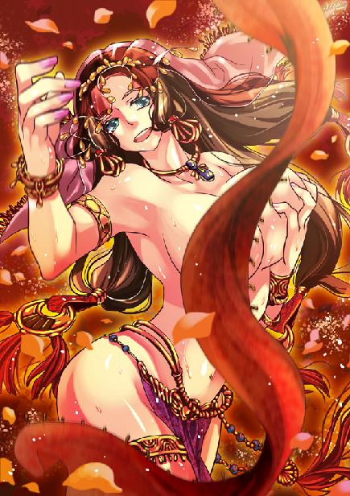
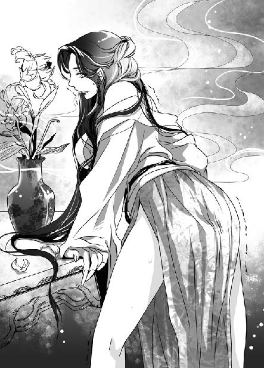
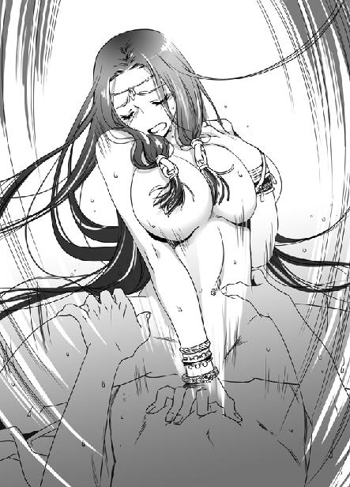

第3集·醉月鸳鸯
序幕篇（3/3）
出版日期：2009-10-09
【本集内容简介】
苏妲己夺走程宗扬的“神具”，却意外给程宗扬制造了机会，程宗扬又会如何替苏妲己解决目前的窘境呢？再次与苏妲己交手，程宗扬能够摆脱奴隶身份吗？
程宗扬用重金买下了阿姬曼，却撕掉她的卖身契，究竟程宗扬葫芦里卖的是什么药？
程宗扬到采石场挑选前往南荒的奴隶，没想到竟遇见了水浒英雄武松，面对这小说中的打虎英雄，程宗扬忍不住想拉拢这个超级保镖。
醉月楼里巧遇西门庆，把酒狂欢之下，西门庆说的尽是让程宗扬摸不着头绪的故事。到底《金瓶梅》中的多角恋到了这个世界，变成什么样的情况？
※ ※ ※ ※ ※

封面人物：阿姬曼·芭娜

插图：苏妲己

插图：阿姬曼·芭娜
“现在我传你一篇口诀，然后有三事相托——你可记得吗？”
“让我想想……”
“一件是锦囊……清江玄真观……一件是苍澜太泉古阵……”
“还有一件……”
程宗扬想起来了——守护好岳帅后人。可月霜多半只想杀死我吧？
不过那丫头吃过摇头丸，趴在地上摇头摆臀的样子还真骚……肉棒插进去，不用动，她就自己扭着屁股把它套弄出来。那滴水的小屄又滑又紧……
咦，好像有些不对。这个光屁股的女人，不是月霜……
“公子！公子！”
天还没亮，香蔻儿的叫声就打破了程宗扬的美梦。
程宗扬从梦中被吵醒，不耐烦地翻了个身，用衣袖盖住耳朵。
“公子！公子！”
小婢用力摇着程宗扬的肩膀。
程宗扬闭着眼，不耐烦地说：“我是商馆的奴隶，不是什么公子！”
香蔻儿不由分说地扯起他的耳朵，大声道：“夫人叫你！”
这一声终于把程宗扬吵醒，他睡眼惺忪地坐起来，“有什么大不了的，这时候来叫我？去南荒还差这点时间？”
“快点吧！”香蔻儿用力推着他。
程宗扬一肚子的不乐意，昨晚他可是辛辛苦苦忙了半宿，刚躺下没两个时辰就被拽起来，难免心里有气。
在香蔻儿的催促下，程宗扬终于爬起来，来到苏妲己居住的画楼。商馆的女主人此时还没有起身，只让他在外面等着。
这一等又等了半个时辰。小婢香蔻儿给他递了杯香茶，就掩门退了出去，想找个人说话也没有。程宗扬靠在椅子上，一手支着下巴，脑袋一勾一勾地又睡了过去。
朦胧中，一个妩媚的声音响起：“公子……”
程宗扬擦了擦嘴边的口水，睁开眼睛，只见一名媚艳的妇人正倚在卧房门外的花架上，笑吟吟地看着自己。
苏妲己乌亮的长发盘成云髻，身着盛装。她上衣是用朱红色的丝绸精心裁制而成，宽大的襟领像百合花瓣一样高耸着翻开，上面绣满云丝状的花纹。精美绝伦的襟口间，露出胸前雪白的肌肤。下身是一条艳丽的红裙，长长的裙摆拖在丝绒地毯上，迤逦生姿。
程宗扬打着呵欠道：“夫人起得好早，真是辛苦了。”
苏妲己用纤指攀着一支芍药在鼻下轻轻嗅着，漫不经心地说道：“公子睡得可好？”
急急忙忙把自己找来，尽说些废话。程宗扬道：“托夫人的福，本来睡得好好的，还没醒就被人叫起来了。”
苏妲己嫣然一笑，耳下两枚翡翠坠子垂在腮侧，一荡一荡，在她雪白的脸颊上映出两片翠绿的光泽，那张白滑如玉的瓜子脸更显得妖媚无比。
“妾身请公子来，是想知道公子往南荒去，可要准备什么东西？”
程宗扬打起精神，“要几个押货的人。不需太多，三四个就足够了。”
鬼知道霓龙丝在什么地方，人少一些，自己要逃走也方便些。
可苏妲己似乎早料到他的心思，“三四个人未免太少。商馆里有几个长年走南荒的，让他们随你一同去。再则南荒部族众多，难免会有冲突，凝羽在我身边也没有事做，叫她也同去好了。另外你再去挑些力气大、能走路的奴隶，路上好办事。”
其他的倒也罢了，让凝羽跟自己一同走，程宗扬又是高兴，又是担心。那丫头被自己搞上手，路上说不定还有便宜可占。不过有她跟着，自己想逃走就没那么容易了。
“全听夫人吩咐。”
这本来是句平常话，苏妲己听到，身子却忽然一颤，攀着花枝的纤指猛然拧紧，指间花茎折断，那朵盛开的芍药低垂下来。她扶着花架，红裙轻颤，似乎里面的双腿在微微颤抖。
就在这时，程宗扬听到一个隐约的声音，仿佛是马达震动的“嗡嗡”声。程宗扬恍然大悟，终于明白这妖妇为什么一大早把自己叫来，却只是聊天打屁。
抱着看好戏的心情，程宗扬皱起眉头，思索着道：“如果人多的话，这一路花费可不少。要有马匹、运货的车辆，还要有帐篷、粮食、衣物……”
苏妲己打断他，“这些自然是要配备的，公子不必多虑。只是……”苏妲己松开花枝，“公子擅长南荒的巫术，可知道那支神具的来历？”
程宗扬胡诌道：“那神具是我从南荒深林中的一个部族得到的，传说是南荒魔神的分身。只要依术念咒，南荒魔神就会附身在神具上。幸好我学过咒语，才花费重金把它买来。”
苏妲己道：“不知公子的咒语是从哪里学来的？”
程宗扬咳嗽一声，“那是很多年以前了，有天我在路上走……”
程宗扬正拿着烧饼，蹦蹦跳跳地穿过马路。一名背着九个麻袋的乞丐突然出现，挡在年少无知的程宗扬面前。
“靓仔！我看你骨格清奇，相貌不凡，有一道灵光从天灵盖冲出，乃是万中无一的咒术天才！这里有一本《南荒秘咒》，记载着这个世界上最强大、最神秘、最恐怖的禁咒！只要一点钱就卖给你！”
苏妲己道：“他要多少钱？”
“十个铜铢。”
“十个铜铢？”苏妲己有些失神。
“哦，我身上只带了三个铜铢，所以他把我的烧饼也要走了，交给我一本《南荒秘咒》。”
苏妲己呆了一会儿，“你就是这样学会南荒的巫术？”
程宗扬谦虚地说道：“一点皮毛而已。”
苏妲己这会儿没有心情探究他话里有几分真假，急忙道：“那你可知道如何破解咒语？”
看着苏妲己着急的样子，程宗扬几乎笑破肚皮，他靠在椅背上，笑眯眯道：“那要看夫人想破解的是什么巫术了。”
苏妲己颊上升起两片红云，水汪汪的媚眼中露出一丝妖淫的媚意，玉齿咬着唇角，腻声道：“知道了还问。”
程宗扬愕然道：“夫人不说，我怎么知道？”
苏妲己踌躇半晌，含羞道：“那支神具……妾身放进去……取不出来……”
程宗扬好不容易忍住笑意，“放在什么地方了？”
苏妲己身子轻颤起来，“就是那里……”
程宗扬搓了搓手掌，“让我看看！想个法子！”
苏妲己欲言又止，她羞眉微颦，满脸红晕，那支折断的芍药花在她鬓侧摇曳着，洒下湿媚的香气。
程宗扬站起身，若无其事地拍了拍衣袖，“既然夫人没有什么事，奴才就先告退了。”说着作势要走。
“等等！”苏妲己叫住他。
程宗扬转过身，看着这个几乎站立不稳的艳妇。
“死奴才……”苏妲己唇角翘起，飞了他一个白眼，然后拉开腰间的狐皮。
狐皮下是一条鹅黄的丝绦，上面还系着一角白巾。妖艳的美妇解开裙带，两手挽住裙腰，将华丽的红裙褪到臀下，颤声道：“就是这里了。”
一条洁白的丝巾缠在美妇腹下，丝巾底部已经被淫水湿透，正不断渗着水。她两条丰腴的大腿紧紧贴在一起，能清楚看到她两腿中间，一个粗大的圆柱体顶起丝巾，正在她腿缝儿间不停旋转。
失去丝巾的束缚，按摩棒旋转的力度立刻强了几段，苏妲己娇喘道：“快……快让它……停下来……”
程宗扬一点都不着急，他翘起腿，摆了个舒服的姿势，口里道：“我说夫人怎么总站着，原来是坐不下来。站那么远，我怎么能看得到？请夫人走近一些，让奴才仔细看看。”
苏妲己无奈之下，只好脸色绯红地双手提起长裙，大腿紧紧并着，夹住腿间转动的物体，一步一颤地走过去，立在程宗扬面前。短短几米的距离，她却走得千辛万苦，两脚软得似乎随时都会跌倒。
程宗扬歪着头看了半天，然后道：“解开吧。”
苏妲己气得变了脸色：既然要解开，你还看那么久干嘛？但程宗扬接下来的话，让她忘了生气。
程宗扬一脸郑重地说道：“神具被东西包着，戾气没办法发散，只会越来越盛。”
苏妲己连忙松开长裙，解下腰间鹅黄的丝绦，将湿透的丝巾扯了下来。电机的震动声顿时变得清晰，一支湿淋淋的黑色胶棒从艳妇下体猛然跃出，嗡嗡作响，转动着滴下清亮的液体。
艳妇的丝绸红裙滑落在地，赤裸着两条白玉般的美腿立在程宗扬面前。她下体已经湿得一塌糊涂，肥白的阴阜沾满淫水，湿透的阴毛一缕缕贴在白嫩的雪肉上，又柔滑又乌亮，按摩棒嗡嗡作响地在她小穴里震颤不已。
看到苏妲己狼狈的样子，程宗扬心里得意万分，他拍了拍座椅，“把腿抬起来。”
苏妲己脸色绯红地啐了一口，然后乖乖抬起腿，白滑的纤足踩在椅面上，将下体挺到一脸坏笑的程宗扬面前。
虽然已经被按摩棒搞得淫水直流、狼狈不堪，苏妲己仍努力摆出女主人的架子，恨声道：“尽管看……看好了……若不想出……办法来……看我怎么……收拾你这……奴才……”
口气虽然很凶，但她那副腿软身颤的娇态，显然没有多少说服力。程宗扬也不理会，只埋头研究她的下体。那根粗大的按摩棒几乎完全钻入苏妲己体内，只露出短短一截。艳妇丰美的性器不知被按摩棒插了多久，滑腻的阴唇被粗圆的棒身撑成圆形，像一张娇媚的小嘴，紧紧含着那根布满颗粒的胶棒。汁液淋漓的淫肉红艳艳地朝外鼓起，随着胶棒的转动微微蠕动着。
程宗扬摸着下巴道：“这神具在夫人身体里面插了多久了？”
“三……四个时辰……”
那就是六七个小时。被这根按摩棒用最大功率干了整整一夜，难怪这妖妇会着急。不过这妖妇的小屄还真强，被干了一夜也没有发肿，只微微有些充血。但看她两腿发软的样子，只怕整个阴道都被按摩棒震得酥麻难耐。
这妖妇下体被淫水湿透，白腻的肌肤沾满水光，显得晶莹而又滑嫩。那片淫肉更是红腻如脂，艳光夺目。
程宗扬好不容易强忍下想去触摸的冲动，问道：“夫人高潮了吗？”
“什……么高潮……”
“就是泄了身子。”
“泄……泄过……”
“泄了几次？”
“四……四次……”
“什么时候？怎么泄的？”
苏妲己娇媚的俏脸露出一丝羞怒，“这……也要……问吗……”
程宗扬板起脸，看着这名羞恼的艳妇。苏妲己咬紧牙关，那胶棒仍在不停转动，布满颗粒的棒身在她蜜腔内敏感的肉壁上无休止地刮磨着。挣扎片刻，最后苏妲己只好屈服。
“公子走后……妾身就……就把它放进去……只……只半个时辰……便泄了身子……”
苏妲己羞媚地叙说道：“妾身想取它……取它出来……它……却在里面生了根……怎……怎么也拔不出来……每……每拔一下……反而又深了几分……妾身一急之下……就……就又泄了身子……”
“妾身……不敢再拔……就留它在里面……谁知它却……停……停……停不下来……妾身禁不住……又……又丢了一次……”
“公子来……的时候……妾身勉强起来……刚走到门口……便泄了……连小衣也……湿……湿透……只好重新换过……”
艳妇咬着鲜红欲滴的唇角，伴随着体内连续不断的“嗡嗡”声，一脸羞媚地历数自己如何被按摩棒搞到高潮泄身的丢脸经过。那种媚艳的羞态，让程宗扬胯下禁不住一团火热，阳具硬梆梆地挺了起来。
程宗扬清了清喉咙，“夫人泄了三次身……”
苏妲己羞答答地纠正道：“是……是四次……”
“哦，我在这里等的时候，还有一次。我说怎么让我等了这么久，坐得腰酸背痛。原来夫人在里面快活地泄了身子。”程宗扬转口问道：“不知道夫人泄了多少？”
苏妲己半是恼怒半是羞涩地狠狠白了他一眼，然后道：“小……小衣湿透了……两腿都……都是软的……你快……快些！妾身……”苏妲己的表情几乎快要哭出来。
程宗扬手指敲着桌子，郑重其事地说道：“夫人既然泄了四次身，不知道这支神具射过几次？”
苏妲己妖媚的杏眼瞪得大大的，樱唇张成圆形，显然没想到这支令她吃尽苦头的神具居然也要射出来。
程宗扬大叹一声，“夫人只记得自己快活！一连泄了四次，却不记得让神具快活！难怪它不愿出来！”
苏妲己咬紧牙齿，胸口起伏片刻，硬生生地忍住下体一波波想要泄身的冲动，寒声道：“死奴才！这神具也会出精吗！”
能模拟射精的按摩棒也有，但不是这一支。程宗扬煞有介事地说道：“夫人有所不知。这神具是以南荒巫术制成，本体是南荒赫赫有名的魔神。夫人泄了四次身，却没有让魔神发泄出来，魔神自然发怒，不愿从夫人体内出来。”
下体那支嗡嗡作响的神具不知震动到哪个敏感点，使苏妲己腿一软，几乎跪在地上。她放下女主人的架子，拉住程宗扬的手臂，软语央求道：“公子……给妾身……想……想个办法好吗……”
程宗扬揉了揉耳朵，又摸了摸下巴，摆出一副为难的表情，沉默不语。苏妲己眼圈发红，泫然欲泣地颤声道：“再……再不拔出来……妾身的性命都……都难保了……”
程宗扬沉思着，缓缓伸出手指。
“六十个金铢。”
“什么？”
程宗扬一脸无辜地说道：“我可不是敲诈啊。算是给我预支的工钱吧。每个月十个金铢，我先预支六个月好了。”
苏妲己咬牙切齿地说道：“商馆当铺的朝奉……每个月工钱是六个银铢！”
程宗扬并不担心苏妲己会翻脸，六十金铢虽然不少，但比起霓龙丝可能带来的利润，并不算高。况且眼前的状况也不容苏妲己不允。
程宗扬往椅背上一靠，“夫人再考虑一下，不合适的话那就算了。”
“就六十个金铢！”
昨天签卖身契的笔墨还摆在案上，程宗扬把笔塞到苏妲己手中，“夫人写个条子，一会儿我好去支钱。”
苏妲己手指发颤地写完，咬牙切齿地说道：“快些……快拔出来……”
程宗扬收起纸条，然后道：“拔不出来。”
看着苏妲己要抓狂的样子，程宗扬连忙道：“除非神具先射出来。”
“那就快……快让它射出来！”
程宗扬两手一张，“它又不会射精。”
一串泪珠从苏妲己眼中淌出，挂在艳妇又尖又媚的下巴上，她梨花带雨地泣声道：“你若不……把它取出来……妾身……妾身……”
这会儿这妖妇真是着急了。也难怪，现在她已经被按摩棒干了四个时辰，差不多是八个小时，就算她天赋异禀，被这支大号按摩棒干这么久也承受不了。
程宗扬道：“现在还剩一个法子。”
苏妲己泪眼模糊地看着他。那按摩棒已经在她体内搅弄了一夜，这一晚自己使尽媚功，就是铁人也化了，可这神具却丝毫没有疲软之态。苏妲己万不得已，才找来程宗扬，只要能把这神具取出，就是三万金铢也给了他。
程宗扬道：“神具虽然不会射精，但只要有人在夫人身子里射了精，再把精液抹到它上面，神具会以为它已经射过精，就会息怒了。”
终于知道了破解巫术的方法，苏妲己不禁破涕为笑，神情又变得骚媚起来，“死奴才……想占妾身……便宜……”
程宗扬拍了拍手，站起身，边走边道：“夫人要找别的男人也行，奴才告辞了。”
刚跨出一步，程宗扬衣角就被人拽住。
“公子……”
苏妲己柔声说着，纤美的玉手伸到程宗扬腰间，轻轻挽住他的腰带。
空气中还飘浮着昨晚的余香，华丽的客厅内，四周垂着重重帷幕，形成一个隐秘的空间。一名穿着奴仆青衣的年轻人靠在座椅上，满脸坏笑地喝着茶。在他旁边，一名姣丽的妖艳美妇赤裸着下体，跪在鲜红的长绒地毯上，她娇俏的瓜子脸上满是醉人的红晕，双腿轻颤着，腿间不时发出奇怪的“嗡嗡”声。
昨晚程宗扬用这支“神具”把冷若冰霜的凝羽搞到泄身，让苏妲己看得脸热心跳。她摆出主人的架式强行留下神具，等程宗扬走后便拿来一试。
这神具果然有趣，苏妲己把它纳入体内，按着程宗扬说的法子，在底部连按三下，便在体内转动起来。
这神具不需人力抽送，更不需如平常交媾般挺身奉迎，只要将它送进阴户，布满颗粒的棒身便在淫肉上恣意研磨，无处不至，那快感竟是苏妲己平生未遇。
苏妲己又惊又喜，不多时便丢了一次。正当她心满意足，待要取出神具时，却发现它仿佛在体内生了根，怎么也拔不出来，往外一扯，便撑得小穴生痛。
惊慌中，苏妲己又泄了一次身。她不知道这是程宗扬暗地使坏，连按三下，让她打开了按摩棒带有防滑脱功能的强制开关。若不关掉开关，就算电力耗尽，这按摩棒也拔不出来，只道是这神具上附的巫术使然。
苏妲己百般设法，那按摩棒非但没有取出，反而越进越深。情急之下，她一连泄了几次身，心里不由更加惊慌。若这神具在体内一味转动，再泄下去不免要损及元阴，不但平生修为付之东流，只怕还会伤及性命。
无奈之下，苏妲己顾不得羞耻，让小婢找来程宗扬，想探出破解神具巫术的办法。
程宗扬说的方法苏妲己半信半疑，不过看他胸有成竹的样子，让这艳妇安心不少。
只要能解开巫术，取出神具，便让他在自己身子里出了精也是无妨的。
※ ※ ※ ※ ※
解开程宗扬的裤子，一根火热的阳具立刻跳了出来，那浓郁的雄性气息，让苏妲己不由微微一惊。
这奴才的阳具虽然粗壮，但也算不得出奇，只是它散发出来的气息颇不寻常，就像是阳光下茂盛的草原，充满了勃勃生机。苏妲己微微一怔，然后妩媚地瞥了程宗扬一眼，双手像抚箫一样扶住肉棒，弯下雪白的颈子，张开红艳的唇瓣，把龟头含在口中。
程宗扬不由自主地屏住呼吸。苏妲己唇舌柔滑之极，阳具仿佛被纳入一个湿腻的蜜腔中，被腻脂般的软肉紧紧包裹住。当她柔软的香舌从龟头滑过，在龟头下方的肉沟一挑，程宗扬舒服得浑身毛孔都仿佛张开，酥爽之极。
程宗扬正靠在椅上，享受商馆女主人唇舌的服侍，厅外忽然传来一个冷冰冰的声音：“夫人。塞外的消息。”
苏妲己刚吮了几口，连忙吐出肉棒，擦了擦唇角，勉强克制住声音的颤抖，“晚些……再说。”
凝羽顿了一下，“是左武军第一军团。”
苏妲己立刻改变了主意，“说。”
凝羽的声音像冰冷的泉水，不带任何感情地从门外传来：“王大将军出塞之后，每隔五日必遣人回塞上报讯。到前日已经失约两次。馆内得来消息，十日前大将军帐下曾有人以水镜传讯，说在草原中遇到拜火教祭司，此后便再无音信。如今城中已经传出流言，说左武军第一军团在塞外遇伏，全军覆没，王大将军身死。”
苏妲己露出惊喜交加的表情，“王紫阳死了？”
程宗扬心里也是惊涛翻滚。他亲眼目睹了王哲之死，看到他麾下的军团血战至最后一刻，但刚刚来到这个世界的程宗扬，很难理解王哲的死意味着什么。现在他隐约认识到，想必有很多人等待着这一刻，等待着王哲的死亡。
苏妲己欣喜的表情让程宗扬本能地生出一阵反感。与王哲相识的时间虽然很短，自己却受惠良多。无形中，程宗扬已经把王哲看作自己的良师益友，一个可以信任并且尊敬的人。
苏妲己道：“立即去探听……哎呀！”
苏妲己发出一声尖叫，身子像触电一样颤抖起来。
房门“咯”的一声低响，凝羽道：“夫人？”
苏妲己脸色时红时白，战栗得说不出话来。程宗扬道：“夫人现在有要事，命令你们都退下，离开院子。”
外面沉默了一会儿，凝羽冷漠地应了一声，转身离开。苏妲己咬住艳红的唇瓣，唇角不住发抖。她两手掩在腹下，细长的蛾眉颦在一起，楚楚可怜地看着程宗扬。体内按摩棒的旋转方向突然反了过来，分成两截的棒身在阴道内左右转动，带来强烈的震撼。
程宗扬道：“这神具是南荒魔神的分身，夫人既然用了神具，就该尽心尽意服侍魔神，为外事分心，难怪魔神会生气。”
苏妲己颤声道：“妾……身知错……了……求魔神……息怒……”
程宗扬一手伸在背包里，握住一个小小的物件轻轻一按。按摩棒重新沿着原来的方向转动起来，艳妇颦紧的眉头慢慢松开。
程宗扬道：“把衣服脱了。”
苏妲己下身赤裸，只穿着那件上衣，她捏住衣角，脸上露出一丝犹豫。
程宗扬道：“夫人现在是在和神具的灵体交媾，难道夫人交媾的时候，还穿着衣服吗？”
苏妲己只好分开衣襟，将那条华美的衣裳褪到肘后，卸脱在地，然后解下胸衣。
她白美的玉体曲线玲珑，羊脂般的肌肤晶莹白腻，通体没有丝毫瑕疵，犹如一件精美的瓷器，在鲜红的毯绒间散发出迷人的光泽。
她丰挺的双乳程宗扬已经是见过的，雪腻的丰臀还是初见。她臀形浑圆，肥滑的臀肉白腻如脂，高翘着又圆又大，肉感十足。不过在衣内，她还贴身束了一条洁白的狐皮，白绒绒的毛皮一直垂到臀沟边缘，无法一睹雪臀全貌。
程宗扬猜测那条狐皮掩盖的肯定是她最后的秘密，如果揭穿，八成会被她灭口，当下只装作无所谓的样子，说道：“夫人穿这么厚，不怕热吗？”
苏妲己道：“妾身……少时受过风寒……习惯了……”
这妖妇应该是师帅的仇家吧？躲在五原城里，仗着白湖商馆女主人的身份隐藏起来。程宗扬暗暗想道。他不客气地占据了那张锦榻，然后道：“把春凳搬过来。”
苏妲己不好叫小婢进来，只得赤裸着白玉般的身子，一步一颤地走过去。由于腿间还插着按摩棒，她只能并紧大腿，走起路来腰肢一扭一扭的，那只浑圆的雪臀颤巍巍抖动着，臀沟下不停滴着水，看上去淫艳无比。
好不容易把春凳拖到锦榻前，苏妲己两腿内侧已经淌满淫水，肌肤湿淋淋又白又亮。她娇喘着，那双白嫩的纤足带着淫靡的水迹，没在地毯的鲜红长绒间，不住地轻颤。
“怎么服侍伟大的南荒魔神，让魔神满意，夫人应该知道吧。”
苏妲己妖媚地瞥了程宗扬一眼，然后赤裸着身子仰面躺在窄窄的春凳上，分开双膝，露出被假阳具撑满的阴户，一边柔媚地向上挺起，一边富有韵律地耸动着雪臀，乖乖做出与人交媾的样子。她腰肢纤软，屁股却肥滑圆翘，丰腻之极，与纤细的腰身形成强烈的反差。那条狐皮紧紧裹在臀上，银亮的狐毛蓬松而又厚密，此时被淫水打湿一片，从臀后低垂下来。
“啊……啊……”
苏妲己张开小嘴，淫浪地叫了起来。
刚叫了两声，一根阳具便狠狠捅入苏妲己柔艳的红唇内，堵住了她骚荡的媚叫。
那春凳有半人长短，苏妲己是仰身躺在上面，头颈从春凳边缘低垂下来。程宗扬坐在榻上，阳具与她张开的小嘴正好是一条直线，这会儿往前一挺，阳具便直直插入艳妇唇间，龟头几乎捅进她喉咙里。
喉咙中猛然多了一个又粗又硬的龟头，顿时噎得苏妲己一阵逆咳。她羞怒地摆动头部，想把这个奴才的阳具吐出来。只动了两下，下体忽然一阵抖动，那支在她体内整整转动一夜，没有丝毫疲倦的神具竟然放缓下来，不再以那种无法忍受的高速旋转着。
苏妲己心头一喜，便放弃挣扎，一边伸出香舌，在肉棒上殷勤地舔舐起来。
程宗扬把按摩棒强制的高速调为中速，一边道：“魔神对夫人的服侍还算满意，怒气降了几分。不过，夫人还要对它表现得更尊重一些——夫人用手小心捧起神具，让它在你屄里进出一下。”
苏妲己这会儿果然听话，她两手伸到腹下，用指尖捏住胶棒底部，在自己红腻的蜜穴中轻轻拖动起来。粗大的棒身撑满了肉穴，随着胶棒的进出，艳妇下体那两片柔软的阴唇翕动着，一圈红艳的蜜肉在穴口时隐时现。苏妲己上身贴着凳面，柔软的腰肢向上挺起，白美的双腿朝两边张开，就像和身上一个看不到的巨人交媾般挺动着红嫩的美穴。她妖艳的瓜子脸被程宗扬挡在腹下，只露出尖尖的下巴和湿润的红唇。
眼前这具曼妙的肉体在春凳上卖力地挺动着，两团丰满的乳房高高耸起，白光光的乳肉在胸前来回抖动。程宗扬一手一个毫不客气地抓住两团雪乳，一边用拇指和食指捏住挺翘的乳头，在指间来回揉捏。
出乎程宗扬的意料，此时正值盛夏，同样是在这间客厅中，昨晚冷若冰霜的凝羽身体炽热无比，而此刻手中的两团乳肉却一片滑凉，让程宗扬不由地想起月霜。但月霜是被人用阴寒的掌力打伤，身体凉一些也不奇怪，这妖妇被按摩棒搞得高潮迭起，应该是通体火热、香汗淋漓才对。
程宗扬揉捏着手中两团软肉，除了体温低一些，其他并没有什么异状。那两团乳肉滑腻如脂，乳头硬硬的，充满柔韧的质感，红嫩的乳晕微微鼓起。程宗扬用力一按，殷红的乳头陷入雪滑的乳肉，手指一松，便又从乳肉中弹出。
苏妲己身体平躺着，伸直喉咙为程宗扬口交。程宗扬还是第一次尝试这种口交体位，如果是自己的女友，程宗扬还有些担心她不愿接受，但对于这个淫媚的妖妇，自己就没有太多心理负担了。
程宗扬以近乎凌辱的方式干着苏妲己的小嘴，阳具轻易就捅进她伸直的喉咙里，重重顶在她咽喉的软肉上。
苏妲己唇舌的技巧极为娴熟，虽然是伸直喉咙，被程宗扬像插穴一样干着自己的小嘴，那条软腻的舌头却总能找到阳具上最令人兴奋的触点。不多时，程宗扬就被她舌尖挑弄得阳具暴胀，精关传来一阵酥麻。
再这样下去，要不了几下就会被这妖妇吸出来。程宗扬吸了口气，从苏妲己唇间拔出阳具，两手拇指紧紧压住龟头的海绵体，用力按动，采用阿拉伯挤奶法，强行解除掉射精的冲动。
怒胀的阳具终于安分下来，没有让程宗扬陷入一分钟射精的尴尬境地。他拍了拍苏妲己的脸颊，“来，换个姿势，把屁股扭过来！”
苏妲己捂住喉头，低低咳嗽着，显然刚才程宗扬那一轮猛干，让她也颇不好受。
对程宗扬说的南荒魔神，苏妲己仍是半信半疑。各种用巫术制成的法器都免不了会有灵力波动，制作越精细，灵力的波动就越精密复杂，但这支所谓的“神具”却丝毫没有灵力波动的痕迹。如果不是亲身“体会”到它的神妙之处，苏妲己会毫不犹豫地认定它只是一支外观制作精巧，却毫无用处的死物。
当按摩棒在体内转动一夜，自己用尽手段，它却一无所动，既停不下来，也拔不出去，苏妲己的信心终于开始动摇。也许这真是一支神具，是以一种连她也未曾听说过的巫术制成，而那个年轻人口中的南荒魔神，说不定也真的存在。
犹疑间，已经减缓的神具似乎在表达自己的不满，突然又高速转动起来。
程宗扬的声音传来：“夫人，尊敬的魔神要从后面干你。”
苏妲己虽然已经泄得浑身酸软，但她清楚知道，这年轻人既没有碰触自己的身体，也没有念诵咒语，更没有施展任何法术，而神具自己就加速起来。
苏妲己不敢怠慢，连忙爬起身，并起双膝，跪在春凳上，撅起屁股。当那浑圆的雪臀出现在眼前，连阅片无数的程宗扬也禁不住在肚子里发出一声赞叹：这妇人竟然连屁股都生得这么妖艳。肥硕的臀部又圆又大，足足比凝羽的屁股大了两号，脂玉般白腻的臀肉又肥又嫩，就像一颗充满汁液的水蜜桃，熟艳得仿佛要滴下水来。丰满的臀肉紧紧并在一起，使她臀沟显得非常深，只能看到一条光润的肉沟被丰腻的臀肉夹在中间，里面水汪汪地浸满清亮的液体。
在程宗扬的指点下，苏妲己两手伸到臀后，抱住臀肉朝两边分开。肥滑的雪肉油脂般滑开，臀沟内满溢的淫水流淌下来，露出一只水光光红艳欲滴的性器。艳妇整条臀沟敞露出来，白腻的臀沟底部，嵌着一朵红嫩的肛蕾。比起她肥圆的屁股，那朵肛蕾显得很小，湿淋淋紧缩着，像朵柔嫩的雏菊。
和每个男人一样，程宗扬对肛交有着浓厚的兴趣。但也和大多数男人一样，程宗扬的女友也很坚决地拒绝了他。因此他的肛交经历还是一片空白。
如果……
嗯，也许就该轮到自己埋在牡丹花下当肥料了。
苏妲己抱着白嫩的屁股，像做爱一样向后挺动着。那支按摩棒几乎完全进入她体内，只露出底部短短一截。程宗扬握住按摩棒底部，往里一按，那只妖艳的大屁股顿时一阵乱颤。
按摩棒在苏妲己体内确实卡得很紧，往外拔出时，红艳的阴唇向外翻开，一圈红腻的蜜肉被带得翻到体外，棒身被蜜穴紧紧吸住。程宗扬握住棒身，把苏妲己柔美的性器拽得往外突出，然后手一松，粗大的胶棒被重新吸进蜜穴，只露出黑色的短短一截，在她穴中振颤着滴下一串淫液。
程宗扬不停拔出、松手，用按摩棒玩弄着艳妇的美穴。那感觉就像是在拿那只充满弹性的美穴作射箭游戏，充当箭矢的按摩棒每一下都直抵花心，干得苏妲己一边浑身乱颤，一边浪叫连声。
此时按摩棒的转速已经调到中速，苏妲己勉强还能承受。棒体不住在穴内进出，那感觉就仿佛一个狰狞可怖的蛮荒魔神，正挺起他粗大的阳具，在她翘起的臀间狠狠肏弄，干得她小穴几乎胀破。
程宗扬忽然停下手，“要不要换个姿势？”
苏妲己连忙点头。再这样下去，只怕她又泄身了。
程宗扬以一个十分舒适的姿势躺在锦榻上，脑后枕着软垫。苏妲己伏在他身上，两手扶着他的阳具卖力地吸吮着，一边把滴水的大白屁股翘到程宗扬面前，让他观赏神具在自己穴内转动的艳态。苏妲己嫣红的小嘴被阳具塞满，唾液混着阳具的分泌物不时从唇角溢出，又被她细致地舔舐干净。程宗扬捧着那只肉感十足的圆臀，一边在心里啧啧赞叹，一边把玩着丰腻的臀肉。
这妖妇的屁股不仅绵软柔滑，充满迷人的弹性，而且还有股奇怪的味道，似兰似麝，一闻到就令人性欲勃发。这就是狐狸精的骚味吧？程宗扬想着，忍不住将苏妲己臀后包裹的狐皮，悄悄揭开一线。
狐皮下露出一线白色的光芒，忽然苏妲己圆润的臀部扭了一下，程宗扬连忙放手，心头怦怦直跳。
如果程宗扬能看到苏妲己的面孔，会发现她根本没有留意自己的小动作。这媚艳的妖妇含住他的阳具，眼眸中散发出奇异的光泽。她滑腻的舌尖在龟头上卷动、吮吸，花瓣般柔软的红唇裹住阳具根部，来回吞吐，还不时挺起鼻尖，去嗅他阴囊的气息。
程宗扬阳具越来越硬，粗大的肉棒将艳妇温润的口腔塞得满满的。比起肉体的滑凉，她口腔还有些温度。苏妲己把龟头吞入喉咙，用喉头的软肉裹住龟头，快速做出吞咽的动作。
从龟头到棒身全部没入艳妇香滑的小嘴中，两颗光滑的乳球在胸腹摩擦着，柔韧的乳尖不时滑过。程宗扬抱着苏妲己肥翘的屁股，阳具越胀越大。
忽然程宗扬十指收紧，紧抓住苏妲己丰腻的臀肉，龟头在她口中跳动着，精液狂涌而出。
这次射精让程宗扬感受到从未有过的畅快，精管在会阴处高高鼓起，快速律动，精液从马眼激射出来，阳具在那张媚艳的小嘴中不住振动，传来令人眩晕的快感。
射精的时间比平常长了一倍，当程宗扬终于觉得情形不对时，苏妲己舌尖在他龟头一转，激射的精液终于停止。
程宗扬仿佛是狂奔到悬崖边上突然止步，他呼呼喘着粗气，浑身都被冷汗打湿。
苏妲己却像什么都没发生过一样，细心鼓动唇舌，将阳具舔舐得干干净净，然后伸直喉咙，将他射进喉中的精液轻咳出来，吐在手心里。妖妇媚艳地低笑道：“公子身体真好，射了好多呢。”说着她伸出舌尖，将唇上残留的黏液一一舔净。
程宗扬勉强动了动唇角。在十二个小时内跟三个女人做了三次爱，上次这么威猛，还是三年前刚认识紫玫，摆脱处男身份时候的事了。这样看来，自己的身体还真不错。不过把阿姬曼和凝羽两次加起来，他也没有这么累，身体就像虚脱了一样，所有的力气似乎都随着精液淌了出来。
看着苏妲己笑吟吟的娇颜，程宗扬一阵害怕。如果不是自己还有一点价值，这妖妇很可能把自己一直吸到全身脱力，变成人干。
苏妲己双手捧着乳白精液，挺起身子，双目异彩连现，“你说只需把这些阳精涂在上面？”
程宗扬连忙点头，机关枢纽早已被他偷偷解除了。
苏妲己分开腿，将掌心的精液倾在下体，用指尖涂抹在蜜穴和胶棒结合的部位。
果然，旋转的胶棒静止下来，苏妲己发出一声媚叫，接着穴中一松，粗大的棒体滑出半截，只剩下胶制的龟头还卡在穴内。苏妲己用沾满精液的手掌握住按摩棒，勉强拔了出来。蜜穴内满溢的淫液顿时像开闸的泉水流淌出来，流得满榻都是。
苏妲己娇喘着，发红的脸颊慢慢转白。她下体被胶棒干出一个浑圆的肉洞，红艳的蜜肉暴露在空气中，那支按摩棒掉在腿间，棒身被淫液浸透，湿淋淋地散发着黑亮的光泽。
苏妲己纤手在下体一抚，当她指尖抹过，圆张的性器紧闭起来，白嫩的大阴唇软软合在一起，已经恢复如初。若非她腿心还湿淋淋地沾满淫水精液，完全看不出交媾过的痕迹。苏妲己娇媚地摊开手掌，用香舌在掌上轻舔着，一面抬起眼，似笑非笑地看着程宗扬。
程宗扬不安地挪动了一下。苏妲己的眼神让他想起小红帽的故事——她是大灰狼，自己是被大灰狼吃掉的小红帽。
“很好的味道……”苏妲己柔媚的声音响起，她挑起鲜红的唇角，轻笑道：“莫非公子还是童男？”
童男？难道我射的是童子精？还是我表现得像个雏儿？
不过和这妖妇比，自己真的只能算个雏儿了。程宗扬只好尴尬地点了点头，安慰自己道：就让她把我当童男好了。说不定她还会给我发一个大大的红包呢。
苏妲己瞥了他一眼，眼中娇滴滴流露出万种风情，那眼神足以让男人浑身的骨头都为之酥软。
如果再来一次，自己就真被掏空了。程宗扬手足酸软地爬起来，“夫人既然无事，我就告辞了。”
面前媚艳的妇人给他一种不安的预感，这间华丽的客厅仿佛一瞬间充满了危险，令人头皮禁不住发麻。
苏妲己嫣然一笑，柔声道：“公子慢走。”
※ ※ ※ ※ ※
密集的鼓声越来越急，台上舞蹈的阿姬曼伴着飞快的鼓声扭动腰肢，雪白而纤软的腰身仿佛一条灵巧的雪蛇。鲜艳的缨络及金黄的饰片在赤裸的腰腹下飞舞着，眩人眼目。
面纱下，舞姬含笑的唇瓣仍和从前一样柔软嫣红，但仔细看去，却多了一分冷漠。
台上的女奴陆续被人买走，祁老四乐得几乎合不拢嘴。如果不是越过大雪山往东天竺这条路风险太大，每年只有两个月时间可以通行，单这条线的贩奴生意就够商馆经营了。
与往常一样，也有不少人对阿姬曼青眼有加，问价声此起彼伏。祁老四满脸堆笑，口风却咬得极紧，一千银铢，一个子儿都不少。
说实话，祁老四觉得这个价钱开得还是低了。像阿姬曼这样的美女，如果贩卖到晋国和唐国，莫说一千银铢，就是再多上几倍，那些一掷千金的豪门巨富也不会皱一下眉头。夫人虽然眼光超群、手腕高明，可不知为何只困守这五原城，从不涉足内陆。五原虽然商旅云集，毕竟是边陲之地，怎么能和临安、建康、长安那样的名都大邑相比。一千银铢这个价钱，问过的不少，却没有一个人愿意掏钱。
阿姬曼一曲舞罢，正待离开，忽然“哗啦”一声，一只沉甸甸的钱袋扔到她脚下。
“这个舞姬——我买了！”
台下静默片刻，然后发出一阵轰笑。祁老四拱了拱手，半是客气半是揶揄地说道：“尊驾听仔细了，这舞姬售价是一千银铢。”
祁老四把“一千银铢”咬得极重，那钱袋虽然份量不轻，大小却是平常，装满也不会超过二百枚银铢。只是那付账的小子身着青衣，多半是哪个富商的小厮奴仆，祁老四面上也不敢怠慢。
“二十银铢兑一枚金铢，一千银铢折五十枚金铢——这个价格没错吧。”
祁老四伸手捞起钱袋，入手一沉，就知道自己看走了眼。他打开钱袋，呼吸顿时一窒。袋里满满的都是黄金制成的铢钱。由于黄金沉重，金铢形制比银铢略小，厚度也略薄一些，但制作精致却非银铢、铜铢所能比较。金灿灿的钱币一如平常的铢钱外圆内方，四周棱线分明，打磨光亮，中间是略暗的金砂，正面是四个凸起的隶字：“六朝金寶”，背面镂刻着麟龙龟凤四神图案。
眼看着这小厮付账的全是金铢，台下都安静下来。六朝钱币通用，最多的是铜铢，其次为银铢，金铢虽然也流通天下，但由于货值贵重，寻常交易中极少使用，台下这些看客，倒有一多半未曾用过金铢。这五十枚金铢，按官方比价相当于一百贯，十万枚铜铢，实际交易中价格还要再高一些。
昨天阿姬曼抛出乳纱的时候祁老四也在台上，这会儿看着程宗扬颇有几分面熟，只是程宗扬换了一身奴仆装束，装扮一新，与昨日那个乞丐模样的家伙怎么也联想不到一处。
祁老四一枚一枚数过金铢，最后束好钱袋，赔笑道：“五十枚金铢，一枚不少。请尊驾到敝馆一坐，待小的奉上茶水，把这舞奴的身契签好。”
程宗扬最不想去的就是白湖商馆。他被苏妲己狠摆一道，阳精大出，走起路来两条腿都是软的，这会儿太阳一晒才有了些力气。别人不知道他的金铢是哪里来的，苏妲己却是一清二楚。如果回去，苏妲己肯定是一手收了金铢，一手留下阿姬曼。
程宗扬脸一板，“该给的钱一分没少，这会儿推三阻四，难道想反悔吗？”说着他转过身，高声道：“各位！白湖商馆收了钱，却不愿给人，天下还有这种道理吗？”
台下的看客都抱着看好戏的心情，闻言立刻鼓噪起来。
祁老四在台上满脸赔笑，想要解释，却哪里开得了口。正一筹莫展之际，忽然看到远处一名披着黑色披风的女子。
程宗扬身上带着霓龙丝的大秘密，苏妲己岂会容他轻易离开。程宗扬一出商馆，凝羽就尾随着跟了出来。
看到凝羽不易察觉地点了点头，祁老四顿时放下心事，笑道：“客官息怒。既然尊驾付过钱，这舞奴就是尊驾所有。待小的取来身契，大伙便钱货两清。先请到后面用茶。”
这边有人松开绳索，把程宗扬请到台后的帐篷内。阿姬曼看了他片刻，然后从台上下来，默默跟在程宗扬身后。
祁老四拿了身契出来，一边叹道：“阿姬曼可是敝馆最出色的舞姬，像她这种姿色在东天竺也不多见。敝馆花重金买来，又用了一年多的时间调教，使在她身上的钱足够再买一名这样的舞姬……”
这不过是商家卖货时的惯用伎俩，程宗扬也不理会，一手接过身契，说道：“还有一个女奴呢？年纪大了些，没有舌头的那个。我也一并买了。”
祁老四愕然道：“那个哑奴？”他搓了搓手，赔笑道：“真是不巧，上午刚刚被人买走。”
程宗扬一惊，“什么？”
祁老四有些尴尬地说道：“那哑奴卖了半年也没卖出去，今日调了价格，被人用十个银铢买走了。”
程宗扬站起来一把拉开门帘，只见外面那架木笼空荡荡的，只剩下一堆零乱的干草。
“谁买走了？”
“听口音，应该是个晋国的商人。”
愣了片刻，程宗扬扔给祁老四两枚金铢，“帮我换成银铢，再叫辆马车。”
按市面价格，两枚金铢换成银铢至少能多挣一枚的赚头。这种豪客祁老四自然打点起精神应承，一面让人去叫马车，一面取了四十枚银铢递了过来。
不一会儿叫好了马车，程宗扬拿起身契，对阿姬曼道：“走吧。”
※ ※ ※ ※ ※
祁老四叫来的马车颇为豪华，程宗扬惊奇地发现，马车的窗户上居然镶了玻璃。虽然色泽发绿，质地不佳，但绝对是玻璃制品。
敲了敲车窗玻璃，程宗扬有些失望地想道：又少了一条发财的路啊。
东方世界的瓷器与西方世界的玻璃在很长一段历史时期内，都被彼此认为是珍品。西方人认为瓷器是用珍珠、玛瑙、各种宝石为原料烧制成的；东方人则认为玻璃是用水晶、美玉再加上未知的精砂烧炼而成。对于穿越者来说，玻璃几乎是所有人的最爱，连程宗扬说到穿越，想到的也是拿一袋玻璃珠骗钱。叹了口气，程宗扬也没把这事放在心上——毕竟自己不知道玻璃是怎么烧出来的，想靠这发财也不可能。
阿姬曼跟着他上了马车，却只垂着头，脸色冷冷的，一言不发，倒像是多了一个冷若冰霜的凝羽，让程宗扬浑身不自在。
看着一脸木然的阿姬曼，程宗扬笑了笑，“没想到吧？”说着他扬了扬手中的纸张，“这是你的身契。”
阿姬曼慢慢抬起脸，碧绿的眸子落在程宗扬脸上，目光闪烁着，似乎想看透他内心真实的想法。忽然她嫣然一笑，挺起身体，一手解开腰间的系带，纤软的腰肢轻轻一扭，舞裙旋转着落在脚下。
少女两手绕到身后，轻轻一扯，鲜红的胸衣松开，圆硕的乳球立刻弹出，带着与她年龄不相衬的丰满，颤巍巍耸在胸前。
车厢里的空间很窄，一伸手就可以碰触到少女赤裸着的雪白胴体。她微微俯下身，两团沉甸甸的乳房在程宗扬眼前抖动着，呵气如兰地说道：“主人要怎么使用曼儿？是用曼儿的嘴巴？还是曼儿的屁股？”
说着她妩媚地转过身，将雪嫩的屁股送到程宗扬面前，一边回过头，绿色的眸子中充满了诱人的媚意。
阳光透过玻璃窗，斑驳地洒在少女身上。那具光洁的胴体仿佛浸在淡绿色的水中，散发出朦胧的光泽。
程宗扬拿着那纸身契，笑容僵在脸上。
阿姬曼回过身，在程宗扬面前摆出一个撩人的姿势，柔声道：“曼儿是主人花重金买来的奴婢，主人想怎么玩都可以……”
说着她分开双腿，柔媚地挺起下体，将娇嫩的玉户放在程宗扬手上，柔软的阴唇夹住他的手指，然后轻轻扭动腰肢，用少女最柔腻的部位在他指上摩擦。
天竺舞姬花朵般鲜嫩的性器裹在指上，带来软腻的触感。阿姬曼微笑着俯下身，解开程宗扬的腰带。
阿姬曼妩媚的笑容渐渐消失了。那个年轻人的阳具软垂着，丝毫没有勃起。
身为舞姬的这些日子里，她已经见过太多男人丑陋的一面。每当自己站在木台上，扭动白滑的腰肢，就能听到下面数不尽的口水声，看到那些男人色授魂与的下流目光。他们就像是一些可憎的畜牲，有的只是动物的本能。而面前这个年轻的男子，竟然对她充满魅惑的引诱无动于衷。
假如不是昨天晚上经历的一幕，阿姬曼会怀疑他不是个正常的男人。而现在阿姬曼心里生出一丝惧意！她很清楚，一个失去对主人吸引力的女奴意味着什么。
程宗扬抽出手指，把那纸身契一撕两半。
“你自由了，不再是任何人的奴隶了。”程宗扬把撕碎的身契放到少女手中。
阿姬曼握着零乱的碎纸，身体僵硬着。她不明白这个昨天还是奴隶的年轻人为什么能突然拿出一笔巨款，更不明白他为什么会把这笔巨款轻易抛弃掉。
阿姬曼忽然抬起头，生硬地答道：“是的。我是和他们勾结起来，想杀你。你准备怎么惩罚我？”
程宗扬道：“我曾答应过，要救你出来。”
阿姬曼红润的唇角嘲讽地挑起，“主人怎么虐待自己的女奴，我见多了。你是会打断我的手脚，还是会把我放在木笼里，为你挣钱？”
望着阿姬曼的眼睛，程宗扬忽然发现，这名看似柔媚如水的舞姬，其实有着倔强的一面。
程宗扬轻咳一声，说道：“那血是真的吧？”
阿姬曼唇角嘲讽地挑起，程宗扬止住了她，“我不是傻子。虽然你的表现超乎我的想象，但你肯定还是个处女——你的身体不会骗我。”
阿姬曼脸色沉了下来，“是处女又怎么样？”
程宗扬看着她的眼睛，忽然道：“你有红褐色的头发。”
阿姬曼的头发是富有光泽的红褐色，宛如耀眼的赤金。
“还有一个女人，头发也是红褐色的。”程宗扬停顿了一下，然后道：“其实，你们母女长得很像。你们的眼睛、鼻子还有嘴巴……”
阿姬曼突然喝道：“不要再说了！”
“昨晚，他们叫你出去，是用她来威胁你吧？”
阿姬曼仿佛受到莫大的羞辱，玉脸一瞬间涨得通红，“我不认得她！”
程宗扬有十足的把握那个被割掉舌头的女奴与阿姬曼是一对母女。虽然一个已经过早地衰老，一个正值豆蔻年华，但她们容貌间有太多相似之处。
阿姬曼脸颊慢慢恢复白皙，“为什么不要我？是因为我长得不够美，无法让你动心吗？”
这样一个漂亮的舞姬脱光了放在面前，说不动心那是假的。问题是，程宗扬这会儿也只有动心的力气。那妖妇用嘴巴将自己整个人几乎都吸空了，面对着阿姬曼这样娇艳的裸女，作为一个男人，程宗扬很尴尬地处于有心无力的可耻境地——哪怕她留给自己一点也好啊。
程宗扬想了一下，然后说道：“我不是因为想得到你的身体才要买你。”
这并不是假话。程宗扬自认为是个负责任的好男人，对于自己的女人——即使她别有用心，也应当承担起责任。如果阿姬曼留在这里，要不了太久，她鲜花般的容颜就会凋零、衰老，和她母亲一样，被尘埃埋没。
但阿姬曼并不相信他的话，她唇角翘起，满含讽刺地说道：“我只是一个跳舞的女奴，除了身体什么都没有。如果不是因为我的身体，又是为了什么？”
看着这名对男人充满戒心的少女，程宗扬有一丝心痛的感觉。他认真说道：“没有人面对你的美丽会不动心。这世上的男人很多，有好有坏，但不是每个男人都像你认为的那样卑鄙。我买下你，不是要当你的主人，而是因为我答应过，要救你出来。”
这是程宗扬第二次说到这句话，阿姬曼讥讽的笑容僵在脸上。车厢内沉默下来，只有马蹄踏在青石上的声音不住响起。
这一趟出来的时间已经够久了，如果苏妲己发现自己拿了她的钱，买走了她最值钱的女奴，用脚后跟也可以想象她的愤怒。程宗扬不准备冒这个险。
“把衣服穿上吧。”
阿姬曼默默穿上胸衣和舞裙，最后用一件长长的斗篷裹住身体，连脚踝也遮掩起来，没有露出一丝肌肤。
程宗扬把剩余的金铢和银铢都取出来，递给阿姬曼，“我的钱都在这里了，如果省着用，足够你回到东天竺。小心些，不要再被他们抓到。”
阿姬曼没有去接，她一手捏着襟口的斗篷，望着程宗扬，然后目光又一次垂了下来。
“是因为我出卖了你吗？”
“嗯？”程宗扬一时间没有反应过来。
“是因为我出卖过你，你才不愿意要我，把我扔掉吗？”
程宗扬倒是很想带上阿姬曼一起走，但阿姬曼要往西回东天竺，自己是向东去清江，只能分道扬镳。
程宗扬苦笑道：“就算是吧。”
“我不走。”
“什么？”
“我不走！”阿姬曼固执地说。
“再往前就该出城了，”车夫的声音传来：“客官要往哪边去？”
程宗扬探出头，刚看了一眼，然后猛地缩回头，“砰”地关上车窗，险些把上面的玻璃震碎。
前面是一条三岔路口，路上行人往来，也不出奇，但路口几个人披的黑色斗篷程宗扬分外眼熟——那是苏妲己身边的女侍卫。她们大半面孔都被斗篷遮住，只露出一双冷冰冰的眼睛，手握剑柄，从行人脸上一一看过。
程宗扬压低声音，急道：“掉头回去！”
车夫不乐意地嘟囔道：“这是赶路呢？还是拉磨呢？”
程宗扬道：“少啰嗦，一个钱也少不了你的。赶紧找间僻静些的客栈，越安静越好！到地方我重重赏你！”
听说有赏钱可拿，车夫立刻打起精神来，一面兜转车头，一面嚷道：“客官就放心吧，寻的地方包你满意！”
程宗扬小心掀开车帘，看到那些女侍卫没有留意这辆马车，才松了口气，对阿姬曼说道：“现在想走也走不了了。”
这些女人多半是冲着自己来的，这会儿各个路口都少不了有人把守，只能在五原城里躲避一时了。
阿姬曼用斗篷遮住面孔，没有作声。
程宗扬留意着街道两边的景物，不多时马车在一处客栈停下，程宗扬给了车夫一枚银铢，乐得他满口道谢。程宗扬含糊几句，领着阿姬曼进门，却只在里面兜了一圈，等马车离开，然后转身出来，另换了一家路上看到的客栈。
那马车是祁老四叫来的，商馆的人如果追查，很容易就知道他们在哪家客栈落脚。五原城是她们的地头，小心些总没坏处。
对于住惯了星级宾馆的程宗扬来说，这个世界的客栈条件未免简陋了一些，但好处是面积阔大，整个偏院只有三间客房。讲好了一枚银铢一天的价格包下整个院子，程宗扬闩上院门，紧吊的心这才放下。
苏妲己还指望着自己给她寻找霓龙丝，绝对不会轻易杀掉自己，但好端端的商业精英，跑到这个世界给人当奴隶，决不是程宗扬的理想。离开白湖商馆，程宗扬就没有打算再回去，如果不趁这个机会跑掉，那才是傻瓜。
现在出城的道路都有那妖妇的侍卫看守，自己一个异乡人，带着一个异族女奴，想从她们眼皮下溜走无异于痴人说梦。现在唯一的办法，就是在五原城躲一阵，等风声过了，再设法离开。
阿姬曼坐在床角，低着头，不知在想些什么。程宗扬取了几枚银铢，把剩下的钱币交给阿姬曼，“把这些钱收好，我去买些衣服食物，你待在这里，不要乱走。”
阿姬曼沉默着，让程宗扬禁不住怀疑斗篷里面包裹的是一具木偶。他不安地伸出手，小心地掀开斗篷，只见阿姬曼眼圈发红，精致的面颊上满是泪水。
“你怎么哭了？”
阿姬曼扭过头，避开他的目光。
“别哭，你现在不是奴隶了，应该高兴才对。”程宗扬小心翼翼地安慰道。阿姬曼的泪水让他满心不安，不知道自己哪里做错了，让这个少女如此伤心。
阿姬曼抹去颊上的泪珠，泪水仍不断流出。
程宗扬连忙道：“我去打水给你洗脸。”
难道这丫头不喜欢自己给她赎身，想留在商馆当奴隶吗？带着一肚子纳闷，程宗扬拉开房门，脸顿时垮了下来。
屋外，凝羽冷冰冰看着他，脸上没有一丝表情。
“蠢材。”凝羽冷冷说道。
※ ※ ※ ※ ※
亭前曲池流水，杨柳依依，使这座位于边塞的庭院，有了些许江南风光。
苏妲己换过一袭白色的丝袍，并膝跪坐在一方淡绿的茵席上，左手挽着宽长的衣袖，右手持壶，慢慢斟着茶，那种淡雅的气质与昨晚的骚媚仿佛换了个人似的。
青瓷制作的茶盏晶莹纯净，犹如冰玉雕成，杯中的茶叶形如瓜子，翠绿的色泽仿佛刚从枝头采摘下来。沸水沏入杯中，氤氲的水雾蒸腾而起，清香四溢。
苏妲己将壶放在手边的红泥火炉上，持杯浅饮一口，在舌尖慢慢品着。
不知出于什么原因，凝羽没有告诉苏妲己自己买下阿姬曼，并且试图逃跑的事，这让程宗扬的担心少了几分。他奔走了一上午，这会儿闻到茶香，不由地感觉口干舌燥。但他现在身份是商馆的奴仆，只能摆出一副老老实实的模样，垂着手站在旁边。
一盏茶饮完，苏妲己似乎对程宗扬老实的样子很满意，嫣然笑道：“这是妾身新得的齐山云雾茶，香蔻儿，赏他一杯。”
小婢答应一声，给程宗扬沏了一杯清茶。程宗扬虽然口渴，捧着这杯滚烫的茶水也喝不下去。苏妲己见状笑道：“妾身却忘了，让香蔻儿给你取一盏酸梅汤吧。”
小婢斟了一盏酸梅汤，双手奉给程宗扬。酸梅汤在井中湃过，凉凉的又酸又甜，口感近似于果汁类饮料，一口喝下去，顿时满口生津。
程宗扬本来提心吊胆，怕这妖妇吃过亏后来报复自己，没想到她言笑晏晏，满脸的温和柔顺，不禁忧心尽去。
苏妲己笑吟吟看着他，吩咐香蔻儿再给他倒上一盏，然后亲手拿起细长的银羹，从一只陶瓮中取了些冰块，调入汤中。
这次滋味更佳，一盏冰凉的酸梅汤下肚，浑身的汗意都消失无踪。程宗扬放下瓷盏，赞叹道：“没想到这么热的天气夫人还藏有冰块，真是难得。”
苏妲己笑眯眯道：“也是没法子的事。冰蛊只有在冰里才能活，一旦冰融了也就化成了水。瞧，为了养这些冰蛊，妾身可是费了好大力气呢。”
说着苏妲己用银羹取了一勺碎冰，递到程宗扬眼前。
阳光下，每一块晶莹剔透的冰晶中，都盘着一条细小的虫子。透明的虫体仿佛与冰块融在一起，如果不细心观看，怎么也看不出这些普普通通的冰块中竟然暗藏玄机。
程宗扬脸颊抽动了一下，他就知道这妖妇没安好心，可怎么也没想到她会在冰里下蛊。虽然不知道冰蛊是什么东西，但只要带个“蛊”字就没有好事。这下可狠狠栽了个跟头，不知道自己有没有运气再爬起来。
苏妲己微笑道：“冰蛊最不耐热，失去寄身的冰块便会四处游动。冰蛊游动时冰寒刺骨，一不小心就会让它冻了心脏、脑浆……”
说着她屈指一弹。一股寒意立刻从程宗扬手臂涌到指尖，手指像冰冻般变得僵硬，皮肤上显出冰块的光泽。
苏妲己伸手一抚，程宗扬冰冻的手指恢复原状，她风情万种地抿嘴一笑，柔声道：“还有些人被它冻住了阳物，轻轻一敲就变得粉碎了呢。”
想到那种惨状，程宗扬立刻打了个寒噤，感觉腹内沉甸甸仿佛塞了一个会游动的大冰砣子。
程宗扬凛然道：“我生是商馆的人！死是商馆的鬼！夫人有什么要求，奴才就是拼上命也一定给夫人完成！”
苏妲己笑道：“真乖。”也不理会他说的大话，一面吩咐道：“凝羽，带他去采石场挑选些奴隶。你去知会祁远，让他在商馆挑些护卫的人手，备上车马钱帛，两日内准备齐全，一同往南荒去。”
“等等！”程宗扬连忙道：“夫人是不是先给我解了冰蛊？如果半路上被冻成冰块，我死了也没什么大不了的，就怕误了夫人的大事。”
“谁让你不小心，连冰蛊都敢吃？”苏妲己笑着宽慰道：“不过你放心，这些冰蛊上都加过禁咒，一时三刻之内不会发作。只要你安心办事，从南荒回来再理会不迟。好了，磕过头谢赏，就去做事吧。”
※ ※ ※ ※ ※
这次乘的是商馆的马车，车帘上“白湖”两个字让程宗扬想起自己脖颈中的奴隶标志。自己的逃走大计这下算是彻底泡汤了，不必有人看守，只要肚子里冰蛊一日不除，自己就跑不出那妖妇的手掌心。
想起苏妲己那副妖媚的艳态，程宗扬就恨得牙根发痒。被按摩棒干的时候那妖妇又乖又听话，一转脸就给自己下了蛊，摆出一张晚娘的脸，把他当成奴才使唤。早知道就不拔出那根按摩棒，免得她有闲心算计自己。
程宗扬看了看周围，并没有见到凝羽的影子。这个冰美人似乎总有办法隐藏自己的踪迹。昨晚的经历让程宗扬见到了另一个凝羽，一个沉浸在肉欲欢娱中的女人。他自己揣测，即使有摇头丸的催情效果，凝羽也不应该发情到那种地步。在自己射精前，她至少高潮了三次。
想起凝羽湿泞的蜜穴，程宗扬不禁一阵心动。她身体反应的热烈程度远远超乎自己的想象，看她的动作，肯定有不少性交的经验。亏她还装出一副冷漠的神态，其实要上手比月霜可简单多了。
程宗扬暗自猜测，不知道她对昨晚山洞里的经历是否会有印象，知不知道自己已经占过了她的便宜。如果能把她收过来，此去南荒也不会太寂寞……
想到这里，程宗扬觉得自己有些可笑，从什么时候起，自己也开始满脑子想着要收女人了呢？以自己目前的处境，这些杂念非常危险啊。
白湖商馆的采石场占了一整个山坳，穿着葛衣的奴隶散在山间，锤凿的敲击声不绝于耳。
凝羽没有露面，她先到了采石场交待了夫人的指令，程宗扬一到，采石场的执事——一个管家打扮的壮汉就迎上来，领着他挑选场里的奴隶。
这里的奴隶分为两类，抡锤的奴隶大多体型高大、身材强壮，为了防止他们逃跑反抗，不少人手脚都戴着沉重的锁链。
相比之下，持钎的奴隶身材就瘦弱了许多。他们蹲在要开采的石头上，一手扶着铁钎，抡锤的壮汉一锤砸下，铁钎“铛”的一声巨响，溅出火花。随着铁锤的敲击，石屑四处纷飞，岩石的裂缝越来越大，一名持钎的奴隶躲闪不及，被纷飞的碎石划破脸颊，脸上顿时多了一道血淋淋的伤痕。
开采岩石最累的是抡锤，将近三十斤的铁锤每天要抡上数千次，身体稍弱一些，就难以支撑。而最危险的，则是持钎。铁锤数千次的抡击中，有一次落点不准，就会砸在持钎人的手上，轻则断指，重则整个手掌都会被铁锤砸扁。
程宗扬看了看，拣着几个受过伤、身体虚弱的奴隶要了。那执事心里奇怪，但这些残疾的奴隶留在采石场也是累赘，有人愿意要自然最好不过，当下无有不允。程宗扬挑一个，他便叫一个，不过片刻就挑了十几名奴隶。
“咦？”
程宗扬游目四顾，看到一名高大的汉子正蹲在岩石上，两手扶钎，他手脚戴着沉重的铁镣，身上覆了一层厚厚的石粉，两眼都是瞎的，不是戈龙还能是谁。
执事道：“这厮原本是商馆的护卫，谁知他吃里扒外，被夫人废了眼睛，送到这里来采石。”说着“呸”了一声，“挨刀的孬货！”
只一夜工夫，那个生龙活虎的汉子就仿佛被人抽干了所有的精气，随着铁锤的敲击，扶着铁钎的手掌不住颤抖。
这样的下场比一刀杀了他还痛快几分，程宗扬心里总算出了一口气，说道：“不用再挑了，有这些就差不多了。”
执事拎起皮鞭，在空中虚抽一记，喝道：“你们几个！都过来！”
那几名奴隶惴惴不安地走过来，在程宗扬面前站成一排。程宗扬倒是一片好心，想借这个机会让他们脱离苦海，可一说要去南荒，几个上了年纪的奴隶就露出惧意，似乎南荒比这随时都会被人砸断手臂的采石场还可怕。
程宗扬低声道：“怎么？他们都不想去南荒？”
执事二话不说，抡起皮鞭一个个抽了过去，打得那些奴隶满地乱滚，然后笑呵呵道：“你问吧。”
程宗扬苦笑道：“不用问了吧。”
执事也不客气，粗声道：“商馆要派人去一趟南荒，挑了你们这些挨刀的死奴才，往后你们就听他吩咐，明白了吗？”
和预料中一样，那些奴隶一个个都把头点得飞快。
执事满意地收起皮鞭，对程宗扬说道：“一共十三个，到外面按了手印，就让他们跟你走。”
执事住的院子在山脚下，外面是光秃秃的石山，烈日几乎把铁钎都融化掉，这里却是浓荫蔽日，山风吹来一片清凉。
一进院子程宗扬就本能地退了一步。一名彪形大汉盘踞在小院内，他身型魁梧，四肢又长又壮，两道浓眉如同刷漆，头颅硕大，脖颈粗豪，犹如一头威风凛凛的猛虎，额角和脸颊上隐隐显出虎皮的斑纹，身上葛衣袒开，露出胸口一片黑黄相间的浓密胸毛——那模样让程宗扬想起草原上遇到的兽蛮人。这汉子比鬃头獠牙的兽蛮人略微顺眼些，但那种威猛无俦的气势比兽蛮武士更凶悍。
别的奴隶都在山间砸石扶钎，这名奴隶却大模大样躺在竹椅上，手摇蒲扇，旁边还放着凉茶。如果不是他身上的葛衣和手脚粗大的铁链，倒像是这里执事的大爷。
那位凶悍的执事一进门就仿佛见了猫的老鼠，先把皮鞭扔得远远的，然后赔笑道：“武二爷，在这儿纳凉呢？”
那位姓武的二爷哼了一声，连眼皮都没抬一下，伸出一只大手在怀里挠着，腕上铁链拉得铮铮作响。
程宗扬从未见过这么嚣张的奴隶，压低声音道：“他是谁？”
执事还没有来得及开口，那大汉就吼道：“二爷姓武！族中排行第二！人称武二郎！有话当面问二爷！背后叽叽歪歪，算什么好汉！”
那大汉声如霹雳，震得人两耳发麻。
执事连忙道：“当日徒手打死两头老虎的，就是这位武二爷。”
打虎的武松？程宗扬顿时来了兴趣。看起来这汉子更像是一头猛虎，头颈的虎斑，身上的虎纹，粗壮的四肢肌肉隆起，剽悍无比。
程宗扬把执事拉到院外，小声道：“他怎么在这里？”
那执事像刚嚼了一枚苦胆，口鼻都挤到一处，一张凶脸满是苦相。
听了他的叙说，程宗扬才了解到，馆里不知从哪里买到这名奴隶，也没有名字，只说叫武二郎。馆里看他有些力气，就送到石场砸石头。这执事在采石场说一不二，遇到这位武二爷可算是受了罪了。刚开始执事还想摆摆威风让他干活，反而被武二郎夺过鞭子抽了个半死，几次交手都被这个戴着镣铐的死奴隶打得落花流水。说来也奇怪，这武二郎一身好功夫，偏生还不跑，倒像是把采石场当了家，前些时候还打死两头误闯进来的老虎。执事打不过，赶不走，现在已经被打怕了，只好把他当大爷敬奉，由着这位凶神作威作福。
程宗扬低声道：“他有没说他有个哥哥？还有个嫂子？”
执事倒抽一口凉气，脸色隐隐发绿，“他还有个哥哥？老天爷！那大郎该凶成什么样？”
武大郎凶成什么样还真不好说，身高顶多能到武二郎的大腿吧。这趟也不知道算不算走运，居然碰到传说中的水浒英雄！如果《水浒传》里头有半兽人的话。
看到那些奴隶宁愿被砸也不愿往南荒去，程宗扬已经隐约感到这趟南荒不是那么好走的。眼见这里还蹲着一位大神，程宗扬不由大为心动。如果能把武二郎带上，路上就算遇到什么危险，有他在也安全得多。
“别愁眉苦脸的了！”程宗扬大度地拍了拍执事的肩膀，“这个奴隶我也要了！”
那执事正求之不得，又是作揖又是打躬，求程宗扬早点把他带走。
程宗扬回到院内，客气地朝武二郎拱了拱手，“武二爷，明人不说暗话——馆里找人走一趟南荒，二爷可有兴趣？”
“南荒？”武二郎虎目一翻，“不去！”
程宗扬鼓动道：“武二爷空手打死两只老虎，这么好的功夫，待在采石场当个奴隶太没前途了。不如跟我走一趟南荒，两三个月时间就能回来，有好处肯定少不了二爷一份。”
武二郎身躯一动，压得竹椅吱呀作响，似乎随时都会四分五裂。他从鼻中嗤笑一声，“南荒那鬼地方，十个进去有六个回不来，就是回来也得少活三年！你以为二爷是傻的，被你一诳就跟你去送死？”
程宗扬还不知道南荒有多可怕，听武二郎也这么说，心里不免又打了个突。不过去南荒还有百分之四十的活命机会，如果不去，自己连百分之一活命的机会都没有，迟早会被冰蛊冻成冰棍。他们还有选择的余地，自己一点选择的余地都没有。
既然南荒这么危险，无论如何也要把武二郎拉上了。程宗扬先捧一道：“久闻二爷是条好汉，武功盖世，义薄云天！”然后发出一声大大的冷笑，“没想到这好汉竟然对南荒畏之如虎，可笑啊可笑！”
武二郎看似鲁莽，却对他的激将法无动于衷，摇着扇子道：“二爷在这里舒服得很，没点好处去南荒那鬼地方干嘛？任你说破大天，二爷就两个字：不去。”
这么说只要给足了好处，一切都好商量。程宗扬立刻摆出豪气干云的架势，“二爷开个条件出来！”
武二郎张开大嘴，仰天打了呵欠。
程宗扬伸出一只手，“五个银铢！”
看着武二郎一脸不屑的神情，程宗扬连忙补充道：“商馆当铺的朝奉每月才拿这个数。”
武二郎呸了一口，连眼珠都不转。
“十个银铢！”
武二郎干脆闭上眼。
“十五个银铢！”
执事脸上的横肉一阵抽搐，他管理采石场，每月也才拿十五个银铢。
程宗扬一咬牙，“二十个银铢！”
武二郎扇子也不摇了，拿起旁边的凉茶“咕咚咕咚”喝完，打了个声震屋宇的猛嗝，然后“呼呼”地打起鼾来。
“五十个银铢！”
“一百个银铢！”
……
最后程宗扬心一横，“十个金铢！再多就没得商量了！”就当自己没赚钱好了，十个金铢都算这孙子的。
执事脸上的横肉已经颤抖起来，程宗扬开出这样的高价，连他也忍不住想丢了手里的差事，跟他跑一趟南荒。
这样的高价很少有人能拒绝，果然武二郎鼾声一停，虎目睁开一线。
程宗扬立刻道：“十个金铢！只要跟我走一趟，每个月就是二百枚银铢！怎么样，武二爷？”
武二郎摸着脸上的虎斑，沉吟多时，让程宗扬看着心里直打鼓。
武二郎挠了挠脖颈，先看看天，又看看地，最后勉为其难地抖了抖手上的铁链，“先把这玩意儿给二爷解开！”
程宗扬大喜过望，立即转头问执事，“钥匙呢？”
执事苦笑道：“如果有钥匙，我早就两手捧着送给二爷了。钥匙都在大管家手里，我这边委实没有。”
终于说动了武二郎为自己效力，程宗扬笑逐颜开，一把钥匙也算不得什么大事，“钥匙好说。就在这儿按了指印，我带二爷他们回去。”
执事飞奔着捧出一张纸，先喝骂着让那些老弱病残的奴隶按了指印，然后恭恭敬敬地递到武二郎手边，赔笑道：“二爷这一去可是虎入山林，龙游大海。小的照顾不周，还望二爷海涵、海涵。”
武二郎张开蒲扇大小的手掌，往纸上“砰”地按了一记，然后站起身来，被他压扁的竹椅“吱呀”一声，如释重负地恢复原状。
武二郎一站起来，程宗扬就发现他比自己想象中更高，壮硕的身形至少超过两米三，就是放在兽蛮武士中，也是一条壮汉。他脸上的虎斑又深又长，一双虎睛精光四射，就像一头直立的猛虎，给人一种强烈的威压感。
程宗扬叫来马车，武二郎挽起手上的铁链，毫不客气地挤了进去，宽阔的肩膀几乎把车厢挤碎。他大模大样地一伸胳膊腿，足够坐四个人的车厢立刻被他庞大的身体挤满，对旁边的程宗扬理都不理，连一点缝隙都没给他留。
程宗扬只好客气地说道：“二爷坐得舒服就好。”然后自己拣了匹马来骑。
回到商馆，程宗扬找到大管家要拿钥匙。那个胖胖的管家也跟执事一样，肥胖的五官挤成一团，苦着脸道：“他的钥匙不在我这里，是侍卫长亲手拿着。”
“凝羽呢？”
“侍卫长陪着夫人出外办事，要明日才能返回。”
程宗扬想了半晌，只好空着手回来。
武二郎早已等得不耐烦了，两手一扬，铁链“哗啦”一声兜住程宗扬脖颈，劈头喝道：“钥匙呢！拿来！”
程宗扬好言安抚，拍着胸脯保证明天一定拿钥匙来，如果拿不来，就让二爷把自己头拧下来当球踢着玩。武二郎这才悻悻然收了杀气。
好不容易安顿住武二郎，程宗扬抹着额上的汗水，不知道自己弄来这头猛兽做帮手究竟是福是祸。他安慰自己，武松怎么说也是侠肝义胆、豪勇过人，在江湖中是响当当的好汉，吐口沫也能在地上砸出个坑来。虽然脾气暴躁了些，主要是因为小时候没上过学，缺乏教养的缘故。这种汉子粗鲁是粗鲁了点，但性子直爽，既然答应了自己，为着“仗义”这两个字，这趟南荒也是非走不可。
苏妲己、凝羽，还有那个小婢香蔻儿都出了门，程宗扬想找个人说话都找不到。有心和武二郎套套交情，可那厮呼噜打得震天响，光凭声波险些能把柴房拆了，程宗扬隔着院墙都坐不住，只好拍拍屁股走人。
苏妲己一走，那些女侍卫也踪影全无。她在程宗扬身上下了冰蛊，那比绳索镣铐还管用，根本不用担心他会逃走，没有再派人看管他。程宗扬一路出来，没有一个人理会。
离开苏妲己的大宅，程宗扬便叫了辆马车。这个世界的计程车没人管理，什么样子的都有，比起上午嵌玻璃的豪华车，这辆就寒酸多了。
说了客栈的名称，程宗扬一边乘车一边琢磨。自己拿着苏妲己的钱给阿姬曼赎身，如果说那妖妇一笑了之，程宗扬第一个不相信。只能解释是苏妲己还不知道，或者知道了，却有更重要的事情要做。趁苏妲己和凝羽都不在的机会，一定要把阿姬曼送走，如果她再被抓回商馆，自己就白费力气了。
另一方面，能让苏妲己亲自出面，肯定是要事。难道是王哲麾下左武卫第一军团有消息传来？
虽然目睹了王哲撼动天地的一击——在他粉身的刹那，刺眼的白光吞噬了整个战场的生灵，但程宗扬还有些隐隐的期待，希望能有一些军士从战场和蔽日的烈火中脱身。不过他也知道，这个希望太过渺小。
王哲一死，在他生前被压制的各种势力都开始蠢蠢欲动。不知道苏妲己跟王哲有什么恩怨，如果让这妖妇知道自己和王哲的关系……
程宗扬忽然想起那只锦囊，连忙打开背包。药丸、皮夹……连那些安全套都在，那只锦囊却无影无踪。程宗扬背后顿时出了一层冷汗。
※ ※ ※ ※ ※
阿姬曼仍裹着那件长长的斗篷，安静地坐在床角。听到房门响动的声音，她抬起眼，静静看着程宗扬。那个年轻的男人脸色很不好，像遇到什么烦心事一样，眉心拧成“川”字，进了门，就倒在椅中，疲倦得连手指也不愿抬起来。
阿姬曼走过去，蹲下身子，捧起程宗扬一条腿，放在膝上，然后帮他除下靴子，按住他的脚趾轻轻按摩。
那年轻人明显怔住了，等清醒过来，连忙闪电般收回脚。阿姬曼扬起脸，微笑道：“是曼儿按得不好吗？”
“不！不！”程宗扬急忙摇手。
阿姬曼再次伸出手，程宗扬却把腿藏了起来，摇着手苦笑道：“不用按了……我有些不习惯。”
程宗扬去过浴足城，但那是商业交易，他掏钱，对方提供服务，天经地义。阿姬曼却不同，让这样一个美貌少女给自己服务，令程宗扬生出一丝亵渎感。
阿姬曼道：“曼儿是主人的女奴，女奴就应该服侍自己的主人。”
“你的身契我都撕了，你已经不是奴隶了。”
“曼儿是主人的奴隶，不是因为那张纸。”
程宗扬头大如斗，这丫头怎么这么固执，跟月霜那死丫头有得比。
“主人出了好多汗，曼儿帮主人擦洗一下吧。”
程宗扬叹了口气，“你想做什么就做什么吧。对了，不要叫我主人，叫我宗扬好了。”
“好的。宗扬主人。”
程宗扬只好不去管她。
阿姬曼在木制的脸盆里打了水，将一条布巾浸湿，然后绞得半干，俯下身，仔细抹去程宗扬脸上的灰尘和汗迹。布巾是用厚厚的棉布制成，比起程宗扬以前用的毛巾略显生硬，但浸过水的布巾覆在脸上，那种清凉的感觉让程宗扬忍不住舒服地呼了口气。
每擦三下，阿姬曼就重新浸一遍水，始终保持布巾的湿凉和洁净。她细致地擦过程宗扬的头颈，然后解开他的上衣，在他胸前细细擦过。不得不说这是一种很美妙的享受，阿姬曼的手柔软而又细致，被她抹过的部位立刻变得清凉，身体的燠热和烦闷一点一点消失。
程宗扬不明白这个倔强的少女为什么要以女奴自居，他也懒得再去想。也许是因为清晨被那妖妇吸得太狠，程宗扬一整天都觉得手足酸软，精神委靡不振，奔波一天之后，这会儿已经累得连眼睛都不想睁开。清凉的布巾在身上轻柔地擦拭着，房间安静得仿佛被密封在盒子里。程宗扬闭上眼，呼吸渐渐变得平顺，在少女的服侍下沉沉睡去。
朦胧中，下身忽然一凉，程宗扬惊醒过来。
外面的天色已经暗了下来，身上的衣服都浸在盆中。自己不知睡了多久，身体已经被擦洗得干干净净，这会儿那少女正用布巾擦拭自己最后的部位。
阿姬曼停下手，“是布巾太凉了吗？”
人被吵醒时往往困意最浓，程宗扬模糊地点了点头，然后又朦胧睡去。
停了一会儿，一个软腻的物体轻柔地含住阳具，暖暖的，带着令人销魂的柔滑感，温柔地在他下体掠过。刹那间，程宗扬有种错觉，仿佛是自己的女友紫玫穿越时空，来到身边，像从前一样顽皮地唤醒自己。
程宗扬慢慢睁开眼，凝视着身下的少女。
阿姬曼不知何时已经脱光衣裙，赤裸着雪白的身体跪在自己腿间。她头颈低垂，用花瓣般精致的唇舌一点一点细致地舔舐着自己的阳具。那对丰满而圆硕的乳球湿淋淋的，她一边舔，一边托起雪嫩的乳房，用浸过水的乳肉代替布巾，在他腿间擦洗。
在她唇舌舔弄下，蛰伏的阳具迅速勃起，塞满了少女的小嘴。阿姬曼抬起美丽的眼睛看着他，嫣红的唇角弯弯翘起，眉眼间满满的都是笑意。
少女小心地吐出阳具，用指尖抹去唇上的湿迹，小声道：“味道好浓呢。”
程宗扬还沉浸在那种久违的感觉中，发现服侍自己的是那个天竺少女，而不是梦中的女友，不知道心里是高兴还是失望。
程宗扬勉强笑了笑，声音略显沙哑地说道：“没有水了吗？”
“井里新汲的水太凉，会吵醒主人。”
阿姬曼湿凉而软腻的乳肉包裹着勃起的阳具，一面说，一面仔细擦拭着。脂玉般细腻的乳肉从肉棒上抹过，沾过水的肌肤又凉又滑，像丝绸一样柔软。
这个还未成年的少女偏生长了一对大到夸张的乳房，形状浑圆，充满弹性。她双手捧住乳房，两团雪白的美肉将阳具从龟头到肉棒整个包裹起来。少女细致地揉动乳肉，那种美妙的触感使程宗扬的阳具越来越硬。他甩了甩头，把刚才梦幻中的一幕和锦囊丢失的忧虑都抛到脑后。
如果是紫玫和自己一起穿越，程宗扬不知道他们俩是否有命离开草原，更不知道两人在这个陌生的世界里，该如何养活自己。这一切，还是让自己独自面对好了。
阿姬曼松开双乳，露出乳间怒胀的阳具。肉棒上的污迹早已被舔舐干净，暗红色的龟头又圆又大，被乳肉擦拭得发亮，看上去很嚣张的样子。
程宗扬抛开心事，笑着说：“现在该怎么办？”
阿姬曼在他腿间款款起身，笑盈盈道：“主人很累了，就坐在这里不用动，让曼儿来服侍你。”
程宗扬张开手脚，以一个舒服的姿势靠在椅背上。
阿姬曼转过身，双腿紧紧并在一起，翘起屁股，一手扶着程宗扬的阳具，一手分开雪滑的臀肉，将龟头纳入穴口，然后缓缓坐下，将阳具吞入体内。
刚破体的下身还是有些许痛楚，阿姬曼咬着唇，等那根粗大的肉棒完全进入体内，颦紧的眉头才舒展开来。她小心地挪动着屁股，让阳具进得更深，然后用柔腻的蜜穴夹住阳具，轻轻套弄起来。
昏暗的光线下，阿姬曼洁白的身体像玉一样光滑，散发出朦胧的光泽。她身体还没有发育完全，肩膀窄窄的，背脊像一枚打磨光滑的玉坠，纤美的腰身曲线细滑动人，那屁股圆圆的，又白又嫩，臀形精致，肤色晶莹，臀沟柔滑光润，一看就是难得的美物。
少女下体仍像处子一样紧窄，阳具插在里面，就像被一张柔腻的小嘴含紧。她两手抱着屁股，就像捧着一粒雪球般套弄着主人的阳具。那小巧稚嫩的美臀与粗壮的肉棒形成强烈的对比，让程宗扬禁不住有种轻微的犯罪感。这个小女孩实在是太美太嫩了，就像是童话世界里白雪一样可爱的小公主……
阿姬曼吃力地坐下去，直到软嫩的阴唇碰到阳具根部，然后回过头，问道：“这样舒服吗？”
程宗扬笑道：“比我想象的还好。”
阿姬曼顿时焕发出光彩，她有些不好意思地说道：“曼儿是第一次做……”
少女身体前倾，两手扶着面前圆桌的边缘，腰肢向下弯曲，将雪嫩的圆臀翘在程宗扬小腹上，然后向上抬起。那只娇嫩的蜜穴柔腻地滑动着，摩擦过阳具每一寸肌肤。程宗扬半是惊讶半是赞叹地看着少女的动作。
阿姬曼没有挺动身体，而是单凭腰肢的扭动，将雪嫩的屁股翘到阳具顶部的位置，将少女迷人的性器完全绽露出来。整根肉棒几乎完全脱出，只剩龟头还插在穴内，从她敞开的臀沟间，能清楚看到那柔嫩的美穴被硕大的龟头塞满，穴口的美肉被撑得微微鼓出，两片精致的阴唇竖着软软夹在肉棒两侧，红嫩得仿佛能滴下鲜红的胭脂来。
不等龟头从穴内脱出，阿姬曼软玉般的腰肢挺起，白嫩的屁股往下一沉，滑腻的蜜穴重新套住肉棒，准确地直没根部。
程宗扬不需要动一根手指，只需要挺着阳具，就有一只鲜嫩的蜜穴主动夹住肉棒，上下套弄着，做出被干的动作。
少女双手扶着桌子，上身和两腿都保持静止，只有雪嫩的圆臀耸动着，渐渐加快。
她浑圆的屁股像一粒洁白的雪球，在程宗扬腿间上下跳动。在她臀下，一根粗长的阳具在雪白的臀肉间时进时出，将那只嫣红的美穴干得不住变形。
程宗扬召妓时也用过女上位，但那些女人只会拿屁股在他身上乱蹲，哪像阿姬曼这样堪称艺术般的精致。阿姬曼的节奏越来越快，她的动作准确而富有变化，充满了舞蹈般的韵律。雪臀起落间，每一下都是从阳具根部到龟头下方，始终让他的龟头插在自己的穴内，保持着被干的姿势。而每一次套弄，她的蜜穴落下的速度和角度都有细微的变化，让他的阳具能干遍自己穴内每一处所在。
由于身体结构的不同，做爱时女方主动很少能有男方的速度和力道，虽然省力，却缺乏酣畅淋漓的快感。阿姬曼的屁股却又快又准，每一下都让阳具干到自己肉穴尽头。程宗扬舒服得浑身酥软，阳具却越来越硬。他四肢摊开，懒洋洋躺在椅上，一边挺着阳具，享受着少女美穴的套弄。龟头和棒身被柔腻的蜜肉包裹着来回摩擦，快感如潮水般涌来，一直延伸到头发末梢。
阿姬曼像跳舞一样，将屁股扭到一侧，以倾斜的角度耸动着。那只嫩穴愈发狭紧，同时带着旋转的力道在龟头上研磨。
片刻后，阿姬曼又换了个姿势，仍是双腿并紧，向后倾斜身体，让阳具与蜜穴保持直线，每一下都让龟头干到她的花心。
程宗扬呼吸声越来越变得粗重，那只雪臀耸动得也越来越快。就在程宗扬即将爆发前的一刹那，阿姬曼白嫩的屁股突然一沉，紧紧套住阳具。紧接着，程宗扬就在她穴内喷射起来。
阿姬曼乖乖撅着屁股，让他把精液尽情射在自己体内。等程宗扬最后一滴精液射出，那只蜜穴柔柔收紧，像一张温柔的小嘴巴般吸吮着他的阳具，让他享受射精后温柔的服侍。
良久，阿姬曼慢慢撅起屁股，离开那根射过精已经变得软垂的阳具。
少女交媾过的性器带着淫靡的柔艳光泽，缓缓吐出阳具。接着一股浊白的精液从穴口淌出，黏稠的液体间，还带着丝丝缕缕的血迹。程宗扬这才意识到，面前的少女初次破体仅仅是十个时辰之前，体内的创伤还没有完全愈合。
“对不起，我不知道——还痛吗？”
阿姬曼笑盈盈转过身，脸上丝毫看不出痛楚的表情。
“主人不应该向自己的女奴说对不起。”
程宗扬挠了挠头，苦笑道：“我都说过一百遍，你已经不是奴隶了。你都离开了商馆，身契也没有了，无论是谁，也不能再把你当成奴隶。”
阿姬曼脸上的笑意渐渐消失，她看着程宗扬的眼睛，认真道：“只要曼儿的罪还没有赎清，就永远是主人的奴隶。”
程宗扬一怔，“什么罪？”
“主人把身契给曼儿的时候，曼儿很害怕……”
程宗扬不解地说道：“应该是高兴吧？怎么会害怕呢？”
阿姬曼眼圈慢慢红了，她抱住赤裸的乳房，低声道：“曼儿在想，如果那天主人真的被曼儿害死了，等他们发现曼儿已经不是处女，一定会很生气地把曼儿卖掉。”
“主人买下曼儿时，曼儿其实心里很害怕。害怕主人会和别的男人一样，惩罚他们不喜欢的女奴。可主人却把身契给了曼儿。还说，主人答应过，要救曼儿出来。”少女小声哭了起来，“曼儿不是坏人……只是，只是他们……”
阿姬曼扬起脸，双手放在胸口，认真说道：“梵天在上，自从知道主人真的宽恕了曼儿之后，我，阿姬曼·芭娜，就发誓要报答主人。”说着她又哽咽起来，“可是曼儿什么都没有，只剩下这具身体。但曼儿背叛了主人，主人已经不喜欢曼儿了……”
阿姬曼的话语和泪水，让程宗扬心里又酸又甜。他伸手将阿姬曼抱进怀里，让她坐在自己腿上，像哄小女孩一样，一边抹去她脸上的泪珠，一边说道：“这会儿你就是因为这件事哭的？”
阿姬曼点了点头，泣不成声地说道：“是我说了谎……”
程宗扬安慰道：“别难过了，我不会怪你。”
阿姬曼泪水涟涟，呜咽道：“主人为什么对曼儿这么好？”
“也许……”程宗扬想了一会儿，“也许我真的很像你哥哥吧。”
阿姬曼唇角弯起，似乎想笑，泪水却像断线的珠子一样滚落下来，她赤裸的手臂抱紧程宗扬，哭泣道：“哥哥……哥哥……”
少女饱满的乳房抖动着，泪水滴在上面，留下斑驳的湿痕。阿姬曼哭得这样伤心，自己的精液还在人家体内，总不好不管。程宗扬拥着她纤美的身体，呵哄道：“都哭出来就好了，把你的委屈都告诉哥哥。”
阿姬曼恸哭道：“哥哥……你走后第三天，城就破了。那天，黑色的死亡女神迦梨用她的衣袍遮住了整个羯陵伽城。崇拜战争之神塞建陀的敌人冲进城市，杀掉了所有男人，把父亲的头颅砍下来，悬挂在城上，然后把我们带进军营。”
“你还记得羯陵伽城城主的女儿吗？那个月亮一样的少女。她比我大五岁，城破那天本来是她的婚礼。可她的未婚夫死在了城头，她也被带到军营。他们让她在宴会上跳舞，用棍子打她……”
“还有她高贵的母亲，他们叫她狗，给她戴上狗链……没多久她们就死了……”
“城里到处都是死人，乌鸦把整个城市都盖住了。被关在军营里的我们每天都有人死去，没有人给我们吃的，好多孩子都饿死了……”
程宗扬道：“然后你就和母亲一起被卖到这里了吗？”
阿姬曼点了点头，泣道：“我不敢叫她妈妈。他们以为她是我的奶妈。”
程宗扬哄劝道：“别伤心了，那些事都已经结束了，不会再发生。而且……至少他们没有欺负你。”
阿姬曼泪眼模糊地说道：“那时我还不到十三岁，他们把我当成小孩子。”
程宗扬心里发出一声叹息。才十二三岁的小女孩突然间家破人亡，作为被俘虏的奴隶目睹了这一切，难免会给她造成心理创伤。怪不得她会对男人那么仇视。
阿姬曼已经哭成个泪人，一让她一直哭下去不是个好主意，程宗扬抛开心头沉甸甸的压力，说道：“阿姬曼是个勇敢的女孩呢。”
阿姬曼扬起脸，迟疑地问道：“是吗？”
程宗扬笑道：“昨天在地牢里，你流了那么多血都不怕痛。”
阿姬曼刚要绽露的笑容僵在脸上。她咬住唇，过了一会儿才道：“在军营里，每个想吃到东西的女人都要那样做。”
程宗扬没想到自己随口一句话，又触到她的伤口，只好闭上嘴，把少女微凉的胴体默默抱在怀里。那一刻，程宗扬感觉到一种深入骨髓的寂寞。无论他多么同情阿姬曼，都永远无法了解她所有的经历。他想起一句话：子非鱼，安知鱼之乐？自己了解得再多，也终究无法代替别人的感受。
少女抽泣着，白滑的肩头在程宗扬胸前耸动。她洁白的脸颊和乳上被泪水打湿，在黑暗中散发出湿淋淋的雪色光泽。
程宗扬顺手拿起布巾，在桌上勾描起来。阿姬曼慢慢停住哭泣，疑惑地看着他用湿巾在桌面上绘出的图案。那是一个奇怪的生物，圆滚滚的脑袋比身体还要大，它伸出手，一张可爱的大嘴巴傻乎乎笑着，手掌圆圆的，肚子上还有一个大口袋。
程宗扬专注地勾描着，最后在它嘴边加上几根胡须，才放下布巾。
“知道它是什么吗？”
阿姬曼迟疑地说道：“是……一只猫？”
“是小叮当啦。这是它的鼻子，一公里外铜锣烧的味道它都能闻到；这是它的嘴巴，张大的时候，能放下一个大号的脸盆；这是它的四次元口袋，里面有各种各样好玩的东西。像能飞的竹蜻蜓，装在头顶人就能飞起来……”
“像羽人那样吗？”
“呃，可能有一点区别……对了，它还有任意门。”
程宗扬画了一个门的图案，“只要打开门，就能去你任何想要去的地方。还有幸运饼，吃下去就能获得好运。还有鬼故事火球，无论对它说什么话，它都能营造出最吓人的气氛，专门用来自己吓自己。还有空气枪，把枪管套在手指上，说声‘砰’，就会把人吹倒……”
程宗扬画出被空气枪打倒的胖虎，逗得阿姬曼“咯咯”笑了起来。
“还有愿望实现簿，上面有很多格子，只要按格子填上条件，不管什么愿望都能实现……”
“真能实现吗？”
“当然能！”程宗扬信誓旦旦地说道。
阿姬曼望着桌上满脸笑容的机器猫，带着一丝崇慕道：“你们的神灵和梵天一样强大。”
程宗扬差点咬住自己的舌头。没想到自己居然在异世界给小叮当找到了一个信徒，还是很虔诚的那种。
程宗扬很难向阿姬曼解释动漫作品与神话的区别。对她而言，有着数不尽道具的小叮当和传说中的大梵天一样，都是神灵的化身。
“怎么了？”阿姬曼疑惑地看着程宗扬的表情。
“……没什么。”
程宗扬可不想在这个世界创造一个崇拜小叮当的宗教，他抱着阿姬曼起身，“把眼泪擦干吧。”一边笑道：“你身体真轻。”
※ ※ ※ ※ ※
阿姬曼在房内洗沐着，然后穿上衣裙。程宗扬打开了房门，清凉的夜风涌入室内，拂去了身边烦闷的空气。淡淡的月色洒在青石上，犹如满地水光。
程宗扬索性坐在石阶上，两腿伸直，舒服地伸了个懒腰。
阿姬曼走过来，侧着腿偎依在他身边。少女长长的发丝在风中飘荡着，刚洗沐过的身体散发着淡柔的清香。
这种感觉真不错，明月在天，清风徐来，身边还有个听话的小美女。可惜这样的时光太短暂，在来客栈之前，程宗扬就打定主意，要趁苏妲己和凝羽都不在的机会，今晚就把阿姬曼送走。
“你还有个哥哥？”
阿姬曼点了点头。
“你知道他在哪里吗？”
阿姬曼犹豫了一下，又点了点头。
“那就好。”程宗扬放下心事。如果没有人收留，他还真不放心阿姬曼一个人在外面生活。
“你把那些钱币都拿上，去找你哥哥。”
阿姬曼沉默了一会儿，低声道：“曼儿知道了。”
她这么善解人意，倒让程宗扬惊讶了。
阿姬曼扬起脸，“曼儿知道，主人现在不方便带上曼儿……”
程宗扬苦着脸看着自己的装束，自己现在还是商馆的奴仆，把阿姬曼带在身边，何止是不方便。
“但主人要答应我，一定要来找曼儿。”
“我答应你。”
阿姬曼一笑，眼圈却红了。程宗扬连忙岔开话题，“你知道怎么走吗？那么远的路，如果……”
阿姬曼道：“主人给曼儿的钱币，买十名奴隶也够了。”
在五原城，五十枚银铢就可以买三名强壮的奴隶，即使一名凶悍的兽蛮人奴隶，卖价也不过一百银铢。在阿姬曼身上花的钱，足够买下七十多名普通奴隶，或者十二名兽蛮奴隶。这样一折算，程宗扬才意识到，自己从苏妲己身上敲的的确是笔巨款。
“你今晚就走。”想了想，程宗扬又叮嘱一句：“小心别被白湖商馆的人看到。”
阿姬曼聪明地没有多问，她弯下颈子，在程宗扬脚背上轻轻一吻，低声解释道：“这是我们的风俗，女奴与主人分别时，要亲吻主人的脚背或者脚跟。”
程宗扬很想告诉她，你已经不再是奴隶了。但不等他开口，阿姬曼就说道：“主人原谅曼儿了吗？”
程宗扬笑道：“你猜呢？”
阿姬曼轻笑起来，“曼儿知道，主人已经原谅了曼儿。”
“为什么？”
少女眨了眨眼睛，小声笑道：“主人硬起来的时候，曼儿就知道了。”
“哈，”程宗扬笑了一声，“怪不得你非要撩拨我。”
“主人对曼儿的服侍还满意吗？”
“嗯，”程宗扬装模作样地摆起架子，“还可以吧。”
“曼儿第一次做，还有些生疏，往后会努力的。”
程宗扬笑道：“往后可要好好努力啊。”
虽然阿姬曼没有说，但程宗扬完全可以想象戈龙那些人是如何胁迫她的。想通事情的原委之后，程宗扬就没再怪罪过阿姬曼，而是对她充满了同情，所以才不惜得罪苏妲己那妖妇，把她赎出来。
分别在即，阿姬曼有些留恋地挽住主人的衣袖，良久才低声道：“越过大雪山，在森林里有一座叫耽摩的城市。曼儿会在那里等着主人。”
程宗扬从来没听说过这个城市，多半是座不知名的小城，阿姬曼在那里有亲哥哥照顾，想必会得到安全。
“主人已经买下曼儿，多余的钱曼儿会替主人保管。”阿姬曼将双手放在心口，诚挚地说道：“梵天在上，等主人来到耽摩，阿姬曼·芭娜会把自己和主人的财富都奉献给主人。”
那天晚上，程宗扬终究没有亲送阿姬曼离开。
主人不应该像送别朋友一样送别自己的奴隶。阿姬曼这样说。她服侍着程宗扬睡下，直到自己的主人睡着，才悄然离开。
※ ※ ※ ※ ※
朦胧中，太阳穴处传来一丝尖锐的刺痛。程宗扬惊醒过来，只觉脑中昏昏沉沉，胸口烦闷欲呕。他用力甩了甩头，接着背后升起一股寒意。
这种感觉他已经很熟悉了。每当附近有人死亡，那些死亡的气息从太阳穴上的生死根进入体内，都会带来这种不适感。
程宗扬下意识地竖起耳朵。他此时的修为用来防身只能说聊胜于无，耳目却灵敏许多。当他把注意力集中在耳鼓上，听力立刻以他无法察觉的速度倍增，连远处微弱的虫鸣声也变得清晰起来。
“师哥……他……他……”一个略显稚嫩的声音颤抖着隐约传来。
另一个人冷哼一声，“怕了吗？”
“可他是……”
那男子的声音在风中断断续续飘来：“……眼下群龙无首，谁不想分一杯羹……我不杀他，他们迟早要杀了我们。”
隔了一会儿，那个少年小声赔笑道：“赵师哥真是好功夫……洞玄九式，徐师哥……就被刺穿了喉咙。他做梦也想不到赵师哥的剑法……”
姓赵的得意地笑了一声，吩咐道：“给他绑上石头，沉到河里去。”
程宗扬等了差不多十分钟，声音不再传来，才吐了口气。没想到自己又撞上一桩谋杀案。不知道他们是什么人，听口气倒像是同门之间自相残杀。程宗扬摇了摇头，这些人平常师哥师弟地叫着，翻脸的时候比对敌人还狠。
从梦中醒来，程宗扬了无睡意。衣上还沾着阿姬曼的香气，那名鲜花般的舞姬却已经杳然远去。这会儿头脑清醒过来，程宗扬意识到有些不对。阿姬曼离别时只字没有提到她的母亲，她对自己这个便宜主人都这么认真，怎么可能对母亲不管不顾？那丫头嘴上不说，又不让自己送她，多半是怕他担心，悄悄去找母亲了。
程宗扬叹了口气，希望那丫头运气够好，能顺利找到母亲和哥哥吧。这种乱世，谁也顾不上谁了……
※ ※ ※ ※ ※
回到苏妲己的大宅，天色刚微微发白。几名早起的奴仆正洒扫庭院，只看了程宗扬一眼，便不再理会。
一路穿过前院、正房、画楼……隔着后院的高墙，就听到雷鸣般的鼾声。程宗扬佩服得五体投地，这武二爷可真是猛人，连鼾都打得这么豪情万丈。
正感慨间，只见小婢香蔻儿两手捂着耳朵，飞也似的从后院跑了出来。程宗扬趁她不备，一把抓住她，把那小俏婢拽到房后。
香蔻儿吓得哇哇乱叫，等看到是程宗扬才松了口气。她晃着白嫩的小手，拍着胸口，心有余悸地说道：“吓死我了。里面睡的是谁？像只要吃人的老虎……”
程宗扬道：“夫人回来了吗？”
香蔻儿白了他一眼，“还没呢。”
程宗扬道：“是个奴隶，准备去南荒，我先把他带了来。对了，你在我背包里有没有见到一只信封？”
香蔻儿撅起嘴，不乐意地说道：“没有。”
程宗扬比划着描述道：“是织锦的面料，黄颜色的，外面用蜡封过，可以防水，你再想想。”
香蔻儿没好气地说道：“是平斜纹织锦，封口有火漆的吧。”
程宗扬一阵惊喜，“你见到了？在哪里？”
自从发现丢了锦囊，他就提心吊胆。王哲托了他三件事，这是最简单的一件，自己居然还把锦囊弄丢了，未免太对不起他。
香蔻儿没有回答，只是示威似的挺了挺胸。
小丫头的胸部还没有发育，只微微鼓起一点，看上去稚嫩可爱。程宗扬愣了一下，试探道：“在你怀里？”
“然也。”香蔻儿笑靥如花地说道。
“太好了！赶快给我。”
香蔻儿耸了耸胸，“你自己拿啊。”
程宗扬露出大灰狼一样的笑容，“你以为我不敢吗？”
香蔻儿皱了皱小巧的鼻尖，两手背在身后，把胸挺得高高的。
程宗扬看看周围没人，毫不谦让地伸出手，贴着小婢的脖颈伸到她怀中。
香蔻儿咬着唇，精致的粉脸渐渐发红。她身上的肌肤滑嫩如酥，两粒小巧的鸽乳微微隆起，软软的细滑之极。
隔着她胸前的衣物，手指触到锦囊的轮廓，程宗扬顿时心下大定。他不客气地张开手掌，在小婢胸前摸弄着，一边捏住她小小的乳尖，在指间一捻。香蔻儿嘤咛一声，身体软软伏在程宗扬手上，一张小脸变得通红。
程宗扬感叹道：近朱者赤，近墨者黑，这小婢整日跟着苏妲己耳熏目染，小小年纪就动了春心。想归想，要程宗扬吃了这根嫩草，他还真张不开嘴。
“找到了！”程宗扬拔出手，笑呵呵掏出那枚锦囊。
香蔻儿红着脸啐了他一口，小声道：“胆小鬼。”
程宗扬摸了摸她脸颊，半是玩笑半是认真地说道：“等你再大几岁，就知道我是不是胆小鬼了。”
目光移到锦囊上，程宗扬顿时一怔。锦囊上的火漆剥落，封口已经被人拆开过，露出里面一角素纸。
苏妲己与王哲有怨无恩，让她知道自己跟王哲的关系，绝非好事。程宗扬心头一急，顿时冒出汗来。他定了定神，“是谁拆的？”
“当然是夫人了。”香蔻儿撇了撇嘴，“一张白纸，有什么好藏的。”
白纸？
程宗扬连忙取出锦囊里的信笺，果然是一张雪白的素纸，干干净净连半点墨迹也无。
“还以为是什么宝贝呢。夫人随手扔了，还是我把它捡回来的。”
程宗扬不知道王哲怎么会封了一张白纸给他，这会儿也无暇去琢磨，笑道：“多谢你了。对了，你找我有什么事？”
香蔻儿脸上忽然一红，甩开程宗扬，转身跑了。
苏妲己不在，香蔻儿一大早到柴房找自己有什么事？难道是……
想到小婢的表情，程宗扬顿时恍然大悟。那天看到凝羽被搞的一幕，这小姑娘真的是动了春心，如果这会儿柴房睡的是自己，香蔻儿已经不是完璧了。
朝柴房走了两步，程宗扬又收回脚。武二郎一见他，肯定就三个字：“钥匙呢！”
这会儿找不到凝羽，还是别去听二爷的炸雷了吧。
※ ※ ※ ※ ※
直到傍晚，苏妲己才满面春风地回来。她已经得到确切消息，左武军第一军团在草原上被大军围攻，除一小队游骑脱离战场返回塞上以外，包括王哲在内的万余军士尽数覆没。塞上驻军已经上书天子，并出动轻骑赶赴战场探寻王大将军的下落。
为了躲避王哲和那个贱人，自己十余年来寸步不敢离开五原城。苍天有眼，终于除去了自己喉中的鲠刺。只要再除去那个贱人，就再没有任何可以束缚自己的存在。
眼前最要紧的，还是那些霓龙丝。白湖商馆早就应该进入六朝内陆，在那些商贾大邑中赢得一席之地。霓龙丝就是一个最好的契机。
“人手找够了吗？”
那名年轻人恭恭敬敬说道：“已经找好了。”说着递上名单。
“武二郎？”苏妲己露出一丝惊讶。
看在肚子里冰蛊的面子上，程宗扬作足奴才的模样，“小的答应每月给他十个金铢。”
“十个金铢？”苏妲己坐起身来。
程宗扬以为她认为这个价格过于昂贵，连忙道：“说好了就走这一趟南荒，三个月三十枚金铢。夫人若是嫌贵，不妨把小的薪水扣掉一半。”
苏妲己摆了摆手，“我是说，武二郎答应了吗？”
“答应了，只不过要先把他手脚的镣铐打开。”看着苏妲己的表情，程宗扬忽然警觉起来，“难道有什么不妥吗？”
苏妲己似笑非笑地看着他，“既然他答应那就无妨了。武二郎义薄云天，只要答应，绝不会反悔。只不过十枚金铢……还真是便宜呢。”
“是吗？”程宗扬意识到自己捡到宝了，顿时心花怒放。
苏妲己瞟了他一眼，这个年轻人身上似乎有一层迷雾，自己也看他不透。说他笨吧，他年纪轻轻，不但手里有多少人梦寐以求的霓龙丝，还知道寻来巧匠织成内衣；说他聪明吧，连戈龙都能把他抓来当奴隶；说他能干吧，从牢里救他出来时，混得和乞丐差不多；说他无能吧，他不但精通南荒秘术，还能说服武二郎为他效力；说他怯懦吧，凝羽亲眼目睹他不动声色地下手杀死孙疤脸；说他勇敢吧……呸，苏妲己自己都不信。一个甘当奴才的人，怎么也和勇气扯不上关系。
这样看来，这年轻人真有些像是商人……
程宗扬道：“不知道取来霓龙丝，夫人要做什么用途？”
苏妲己媚眼如丝地说道：“自然是做些衣物了。”
“呵呵。”程宗扬干笑两声，他很怀疑这些二十一世纪还嫌过于暴露的内衣，在这个时代会有人买。
苏妲己似乎看透了他的心思，笑吟吟道：“你可知道我这商馆平常做些什么生意？”
不就是贩卖人口吗？这生意有什么光彩的。
苏妲己悠然道：“五原城最大的青楼醉月楼，就是我白湖商馆的产业。从五原往东，直到重泉、竞州、夷陵，都有我白湖商馆的醉月迷花旗。”
原来是连锁妓院，难怪这妖精会如此看重霓龙丝。透过自己的经验，程宗扬得出结论，这些情趣内衣对男人的杀伤力完全是无解的。如果醉月楼的妓女人手一套情趣内衣，必定是客如云来，财源滚滚。
现在连程宗扬都忍不住幻想自己能找到霓龙丝，如果能在这个世界织出二十一世纪才有的吊带、镂空、蕾丝、透明、真空……等等各种情趣内衣，无疑是造福所有男性的绝大善举。
“凝羽，你去解了武二郎的镣铐。”
凝羽提醒道：“夫人。”
苏妲己笑道：“那厮虽然凶蛮，但说过的话从来没有不作数的。既然答应为我商馆效力，就用他这一次。况且武二郎只是暂时屈身在我这里，也不好留他一辈子。先解了他的镣铐，待从南荒回来再作计较。”
主人这样说，凝羽只好答应，“是。”
看着跃跃欲试的程宗扬，苏妲己笑道：“凝羽，办完事带他去醉月楼，就说是我的吩咐，让她们好生侍候。”
凝羽面无表情地说道：“刚才祁远来报，当日从天竺换来的那名舞姬，被人用五十金铢买走了。”
“哦？”苏妲己一怔。
程宗扬心一下子悬了起来，他不敢确定阿姬曼现在是否真的离开了五原城。那个祁老四也许不认得自己，凝羽却看得清清楚楚，知道是他买下了阿姬曼。
苏妲己想了一会儿，有些不舍地说道：“枉费了我在她身上花的力气。去查查是谁买走的。五十个金铢，倒让他捡了便宜。”
出乎程宗扬的意料，凝羽并没有直接把自己交出来，只简短地应了一声。
离开画楼，程宗扬做了贼免不了有点心虚，忍不住去看凝羽的脸色。凝羽神情冷冷的，似乎什么都没发生过。
程宗扬讪讪道：“多谢……”
凝羽屈肘一撞，捣在程宗扬胸腹间。程宗扬险些被撞得闭过气去，只说了半句的话被生生噎住。
凝羽头也没回，掠出月洞门，程宗扬扶着墙直起腰，好不容易喘过气跟了出去，没等他开口，凝羽就冷冷道：“她能听到。”
程宗扬立刻闭嘴。
“这里不妨。”
程宗扬抹了把冷汗，此处距离画楼有五十米的距离，那妖精要是还能听到，也未免太强了。
凝羽讥嘲道：“救了一个女孩，是不是觉得自己是英雄了？”
程宗扬点了点头，“侍卫长明见万里，确实有一些。”
凝羽冷笑道：“不要高兴得太早。她留在这里，未必是坏事，你买下她，未必就是好事。”
程宗扬挑起唇角，“是吗？”
凝羽反问道：“你不觉得那舞姬有什么异样吗？”
程宗扬先想起阿姬曼那对硕大的乳房，以她的年纪来看，那对乳房未免太大了。还有她的舞技，程宗扬敢断定阿姬曼的舞姿完全是为性交准备的。
“夫人花了偌大力气调教她，过两年送往内陆，再不济也能被个王孙公子买走，作为侍妾。现在你把她买下来，让她自己往东天竺去，若路上被人拐骗，可未必有现在的下场。”
程宗扬强笑道：“夫人这么用心调教阿姬曼，就是想把她卖钱吗？”
凝羽意味深长地看了他一眼，“夫人原本要把她送往黑魔海，所以才不许男人碰她。”
“黑魔海？”
凝羽没有解释，她停下脚步，然后推开院门。
一条猛兽般的大汉立在门前，虎目精光四射。武二郎双臂一展，“铮”的一声，腕间铁链拉得笔直。
凝羽取出一枚形制奇异的钥匙，慢慢打开武二郎手上的镣铐。虽然知道武二郎不是喜好暗施偷袭的小人，但在他的威压下，凝羽仍不禁绷紧了身体。
“嗒”的一声，镣铐松开。武二郎一把夺过钥匙，打开脚上的铁镣，随手扔给凝羽，然后舒展了一下双臂，挺起胸，爆发出一阵狂笑。
凝羽脸色微变，翻腕握住刀柄，“武二郎！你要食言吗？”
武二郎傲然道：“二爷说过的话从没有不作数的！”说着双肩一耸，跃上院墙，犹如一头出闸的猛虎般掠过重重屋脊，转眼就消失在暮色中。
愣了半晌，程宗扬才道：“他去哪儿了？”
“我怎么知道。”凝羽冷冷道：“去醉月楼。”
※ ※ ※ ※ ※
“醉月频中圣，迷花不事君。”
自从被醉月楼拿来标在自己的艳帜上，这两句诗就被一群风流兼下流的才子们歪解为寻花问柳、饮酒作乐的口号，竞相标榜，无不以醉月迷花为乐事。
醉月楼位于五原城西郊，举头就能看到大雪山峰顶的皑皑白雪。醉月楼虽以楼名，却是楼阁林立。积雪融化成的溪水从山间蜿蜒而下，在醉月楼的画楼雕阁间九曲三折汇成一座亩许小池，最后绕楼而过。
坐在楼中，天际一轮明月悬在雪峰上，与池中的雪山月影交相辉映。隔着粼粼水光，婉转的歌声在月色中，伴着淡淡的水雾飘来，隐约能看到远处楼阁上舒展的舞袖和窈窕的纤影，让人分不出这里究竟是人间还是天上。
“好地方！”程宗扬赞叹道。
雪水融成的溪流清凉无比，正值夏日，水面形成一层雾气。清风徐来，楼阁间的暑热顿时一空，风中带着淡雅的花香，沁人心脾。
看到自家商馆的马车，自然有人通报。一名中年美妇迎出来，见到来的是凝羽不由地一怔，接着笑道：“原来是侍卫长，不知道夫人有何吩咐？”
凝羽道：“这是今晚的客人，夫人交待过，你们都听他吩咐。”
那美妇笑道：“我说烛上怎么结了一个好大的灯花，果然是有贵客。”说着她挽住程宗扬的手臂，举止亲昵，却丝毫不让人反感。
程宗扬笑道：“不知道姐姐怎么称呼？”
“奴家姓兰，官人抬举，叫一声兰姑便是。”兰姑一边说，一边笑道：“还剩了一处临水的上房，奴家已经叫人去收拾了。不知道官人喜欢哪种的，奴家好叫姑娘们来侍候。”
难得有人免费招待，程宗扬也不客气，“楼里最红的姑娘叫两个来。”
兰姑挨着他耳边笑道：“楼里有娼有妓，客人要哪种的？”
程宗扬道：“这还有区别吗？”
“娼是卖身的，官人想做什么就做什么。妓只陪客人喝酒弹琴，卖艺不卖身的。”
程宗扬笑道：“真有不卖身的吗？”
兰姑推搡了他一把，低笑道：“那是哄外人的，既然夫人吩咐过，官人自然想做什么就做什么。只是那几个歌舞妓没侍候过客人，怕官人不满意。”
程宗扬笑嘻嘻在她脸上摸了一把，“尽管叫来。”
走在旁边的凝羽脸色忽然一变，藏在斗篷下的手指收紧，握住腰侧的刀柄。
迎面走来一个年轻男子，他头结方巾，穿着一袭素白的锦衣，身材比程宗扬还高了少许，一手拿着把大花洒金的折扇，举手投足风度翩翩，玉树临风。他五官俊雅，眼睛周围略显红晕，犹如桃花，眼角微微上挑，带着一缕勾人的笑意。
程宗扬还是头一次看到长着桃花眼的男人，不禁多看了几眼。那男子眼睛黑白并不分明，黑色的瞳孔却越看越深，令人捉摸不透。他眼角微微含笑，眼神似醒非醒、似醉非醉，朦胧中充满邪恶的诱惑力。
程宗扬暗暗想道：如果放到二十一世纪，单凭这小子的卖相，就是巨星级的偶像。只要眼神一抛，肯定有成千上万的痴女争先恐后抢着倒贴。
那男子虽然俊雅，身材却不单薄，只不过脸色不是太好，抱病般隐隐透出一抹青色，一手拿着折扇，一只手还插在胸口的衣襟中，不时发出几声轻咳。
凝羽手指捏得发白，脸上仿佛蒙着一层寒霜。旁边的兰姑却眼睛一亮，松开程宗扬的手臂，上前笑声道：“原来是西门大官人，难得今天得闲。”
西门大官人？兰姑那几个字说得媚姿横生，听在程宗扬耳朵里，却比武二郎的霹雳暴吼更响亮。
那男子低咳一声，笑道：“兰姑越来越美貌了。不知小生何时才有福气娶兰姑这样的美人儿过门。”
兰姑笑啐道：“大官人宅里放着几个天仙似的娇娘，哪里还会看上奴家？”
西门大官人与兰姑说笑着，那双桃花眼不住往凝羽这边瞟。寒暄完，他上前一步，两手抱拳，向凝羽作了个长揖。可惜他动作匆忙了些，右手从怀里拔出时带出一件事物，“啪”地掉在地上，却是一只绣花弓鞋。
周围诸女都忍不住发笑，可这西门大官人脸皮不是一般的厚，对自己出的丑视若无睹，两眼注视着凝羽，低声道：“好久不见。”
程宗扬真的开始佩服起这小子了。平平常常四个字，他竟然能说得深情无限，还充满沧桑感。不知道的还以为他们两个之间历尽沧海桑田，才再度重逢。
凝羽退开一步，冷冷道：“大官人的鞋子掉了。”
旁边的侍女忍不住笑出声来。西门大官人捡起那只绣花鞋，含笑纳入怀中，举止潇洒得足以令小女生晕倒。程宗扬扪心自问，要自己当着这么多人的面，捡起一只女人的高跟鞋死不要脸地往怀里塞，恐怕打死他也做不出来，何况还做得这么潇洒。
可西门大官人不但做了，还有脸解释：“这绣花鞋样子不错，小生好不容易求她脱下来，好给我家几个姑娘作鞋样。”
周围人再忍不住，顿时弯了腰，笑得花枝招展。一片莺声笑语间，西门大官人一脸无辜地说道：“小生说的有错吗？”
一名小婢忍笑道：“大官人说的没错。只是女儿家的绣花鞋不好拿出来。让人看到，只怕要误会大官人。”
西门摇头叹息，“其实你们都不了解我的内心，不知道我是什么样的人。”
一群女子笑得更厉害了，兰姑怕他着恼，抿嘴笑道：“大官人需要什么，尽管吩咐，一会儿奴家再叫两个姑娘过去伺候。”
西门大官人一手放在怀里，轻轻咳了两声，脸色更显得青了，“让兰姑费心了。小生约了几个朋友谈生意，一会儿还要劳烦兰姑捧场。”
兰姑连忙答应了。
西门那双桃花眼又瞟了过来，柔声对凝羽道：“你若在白夫人那里做得不开心，小生就向白夫人讨你过来，好不好？”
不顾周围女子羡慕的目光，凝羽像被毒虫蜇到般身子一颤，板着脸道：“不必。我待得很好。”
西门大官人微微一笑，那双桃花眼春水般从诸女身上掠过，百忙中还向程宗扬点头示意，说了声：“兄台相貌不凡，以后多多亲近。”然后才低咳着，摇摇摆摆地走了。
程宗扬还没有从震惊中恢复过来，到了楼阁中坐下，他顾不得观赏周围的风景，便拉着兰姑问道：“刚才那人是谁？”
兰姑讶道：“公子不认得西门大官人吗？”
程宗扬咬牙道：“他是不是单名一个‘庆’字？”
兰姑笑道：“正是。五原城谁不知道西门大官人，他有潘安般貌，邓通般财，又脾气和顺，院子里姑娘哪个不爱煞了他，天天盼着被大官人接到家里……”
后面的话程宗扬已经充耳不闻。他怎么也想不到，传说中的千古第一淫人竟然是个如此风流倜傥的人物，即使知道他的底细，也生不出半点反感。
程宗扬自言自语地叹道：“难怪潘金莲会跟了他。”
“谁说潘姑娘会跟了他？”凝羽冷笑一声。
程宗扬露出怪异的表情。既然在这个时空遇到西门庆，有潘金莲也不奇怪，但……潘姑娘？
“潘金莲不是武大郎的老婆吗？”
凝羽不屑地撇撇嘴，没有理他。
兰姑笑道：“这事在院子里都传成笑话了。那潘金莲跟白武族的武大订的是娃娃亲，还没过门呢，就跟武大的弟弟武二有了私情。西门大官人好意去提点武大郎，没想到那武大郎性子蛮横，竟然发起凶来，打伤了西门大官人——”
“停！”程宗扬小心问道：“没搞错吧？武大郎打伤了西门庆？”
怎么不说武二郎强奸了潘金莲呢？
兰姑道：“听人说那武大郎身高九尺，脸上的虎斑一直长到肩膀上，脱了衣物分不出是人是虎。潘金莲娇滴滴一个女儿家，怎么愿意嫁给这么个半人半兽的凶人？那潘金莲面带桃花，天生的媚相，偏他还当成了宝，容不得人说半句实话。西门大官人不过多了句嘴，就被那莽汉子一脚踹在胸口，险些丧命。亏得西门大官人家里开着生药铺，好不容易才将养过来，到现在还咳嗽呢。”
武大郎居然身高九尺？程宗扬听得目瞪口呆，几乎不敢相信自己的耳朵，现在演的到底是哪一出？
凝羽冷冷道：“你都是从哪里听来的？”
兰姑笑道：“五原城都传遍了呢。西门大官人伤还没有好，那武大就遭了报应，失足落下山崖，抬回去没多久就咽了气。”她压低声音，眉飞色舞地说道：“听说是潘金莲跟武二当着他的面偷情，把病榻上的武大活活气死的。”
“胡说。武大郎是白武族第一高手，玉环步的修为还在武二之上，什么山崖能把他摔死？还说潘姑娘跟武二偷情……”凝羽露出不屑的表情，“潘姑娘是光明观堂的弟子，怎会做出这种事来？多半是哪个小人在背后造谣。”
兰姑笑道：“那是西门大官人亲眼所见，怎会有假？”
不用说，那造谣的肯定是西门大官人了。程宗扬笑吟吟听着，问道：“那武二郎呢？”
兰姑道：“那武二是个无赖，听说犯了案子被官府捉拿。那几日西门大官人吓得门都不敢出，生怕被他寻到。”
“不好！”程宗扬猛然想起一事，腾地站了起来，“这是什么楼？”
兰姑略一错愕，然后笑着在他额上一点，“当然是醉月楼了。”
程宗扬松了口气，还好还好，《水浒传》中武松大展神威，血溅鸳鸯楼，还好这里是醉月楼。
兰姑对旁边的小婢吩咐道：“去叫几个姑娘，来鸳鸯阁陪客人。”
“砰”的一声，刚放好的椅子被程宗扬撞倒。
这下连凝羽都露出奇怪的表情，不知道他怎么会如此失态。
程宗扬喉结勉强动了一下，“西门大官人在什么地方请客？”
千求万拜，只希望一切别那么凑巧，可惜天不从人愿，话音刚落，头顶就响起一声霹雳。
“西门狗贼！给二爷滚出来！”
雷霆般的声音滚过，阁中顿时鸦雀无声。
程宗扬与凝羽面面相觑，过了会儿，凝羽咬着牙低声道：“他不是答应过你了吗！”
程宗扬苦笑道：“我怎么知道这位二爷要找大官人报仇？”
凝羽目光闪闪地看着他，忽然冷笑一声，“那家伙要是真被武二杀了，就有好戏看了。”
程宗扬心里七上八下，他倒不担心西门庆被杀——那种家伙就算死一万个，他也不会皱皱眉头。问题是，据程宗扬所知，《水浒传》中，武二郎在鸳鸯楼没有杀掉西门庆，而是误中副车，干掉了一个凑热闹的倒霉鬼。
程宗扬惴惴不安地想，那个倒霉鬼不会就是我吧？
楼上一个阴恻恻的声音响起：“是哪个吃了熊心豹子胆，敢找西门大官人的麻烦？”
这声音听起来非是善类，但程宗扬却认出并非西门大官人的咳嗽说话声。
然而，这句话一出，武二郎立刻寻到目标。“呼”的一声，一道庞大的身影带着劲风扑到楼上。
顷刻间劲风交击声夹杂着虎啸，狂风暴雨般响起，震得楼阁不住响动。
那人随行的护卫怒喝着出手，打斗声、叫骂声、女子的惊叫声、桌椅器皿的破碎声……响成一片，不绝于耳。
楼上侍酒的女子一面惊叫，一面啼哭，钗脱发乱地纷纷跑下来。然后一声巨响，一名护卫打扮的汉子贯窗而出，在半空中喷出一团血雾，“砰”地落在水池中。紧接着精美的轩窗一扇扇被劲风击碎，从楼上飞落下来。
兰姑又是肉痛又是惶恐，一张玉脸惊得雪白，周围的婢女紧靠着墙壁，一个个花容失色。凝羽紧握刀柄，身体微微前倾，仿佛绷紧的弓弦，美目寒光四射。
程宗扬强笑道：“武二爷真是爽快人。”
这厮闯进来一句废话没有，直接开打，难怪会杀错人。
头顶忽然一声暴喝，楼中那根一人粗细描金彩绘的立柱被人用重手法击中，“咔”地绽开一条裂缝，楼顶的瓦片一阵脆响，整座楼阁都为之摇撼起来。
几名汉子惨叫着被人从门窗中抛出，“噗通、噗通”掉进池里，溅起一片带血的水花。
狂风骤雨般的震响一瞬间宁静下来。那个阴恻恻的声音已经气若游丝，“我……我不……”
武二郎喝道：“狗贼！待二爷取了你的鸟头祭奠哥哥！”
“咯”的一声脆响，接着虎啸声响起，武二郎魁梧的身影穿窗而出，手中提着一颗颈下滴血的头颅，转瞬消失在夜幕中。
鲜血渗过楼板，在头顶浸出一片血红。清波荡漾的池中，被武二郎击毙的尸身从池底浮起。眼前的惨况使那几名小婢几乎瘫软在地，连兰姑都手脚发颤。
程宗扬头痛一样揉着太阳穴，然后伸着脖子看了看，讶道：“咦？西门大官人呢？”
楼上已经是气息全无，倚仗生死根，程宗扬清楚知道死的除了那个多嘴的客人，就是池中那些护卫，看来看去却没有西门庆的身影。
忽然阁内传来几声压抑不住的轻咳。程宗扬霍然回头，盯着房中那张圆桌，喝道：“出来！”
那咳嗽声只响了两下，便又悄无声息。
“再不出来我就喊了！”程宗扬扯开喉咙，叫道：“武二郎！”
“莫叫莫叫！”桌下帷幕一动，探出一张俊雅的面孔。西门大官人脸色青白地左右看了看，然后赔笑道：“兄台切莫高声。”
“快点出来！”
“这就出来，这就出来。”西门庆又左右看了看，这才小心翼翼地从桌下钻出来。
这间雅阁除了程宗扬、凝羽、兰姑和几名小婢再无他人，谁也不知道他怎么钻到了桌子下面。
程宗扬奇道：“你不会是一直躲在里面吧？”
西门庆灰头土脸地钻出来，看了看左右，顿时恢复了玉树临风的姿态，除了手指还有些发抖，倒还称得上风流倜傥。
这会儿武二郎已经走远，西门庆从容起来，先咳了两声，然后笑道：“小生正在楼上宴客，不料碰上恶客，只好暂避一时。事急从权，还望兄台恕罪。”说着作了个长揖，直起腰又朝兰姑和那几名小婢眉目传情，那双桃花眼像会说话一样勾人，顿时惹得几个小婢羞红了脸，也忘了害怕。
兰姑殷勤道：“大官人可受惊了？”
西门庆含笑大度地摆了摆手，“无妨无妨。”
“喂，”程宗扬提醒他，“外面可是死了一堆人呢，都是你的替死鬼。”
西门庆凛然道：“那武二天生匪类！凶恶好杀！残无人道！小生必定要禀报官府，为枉死的兄弟讨个公道！绝不让这种匪人逍遥法外！”
兰姑奉承道：“西门大官人好一副仁义心肠。”
西门庆潇洒地一挥手，手中洒金的折扇展开，扇面上一朵富丽堂皇的牡丹红彤彤娇艳欲滴。他摇着扇子叹息道：“若不是小生天生的急公好义，看不得有人纵行淫恶，怎会惹上武家兄弟那对凶神？”
看着西门庆很欠扁的那张俊脸，程宗扬很有打一拳的冲动。凝羽早听不下去了，俏脸如冰地拂袖离开鸳鸯阁。
“凝姑娘！”
西门庆还没顾上和凝羽说话，连忙拔足欲追，程宗扬一句话就让他打消了念头。
“……武二郎，说不定还在外面呢。”
西门庆立刻收回脚步，朝程宗扬揖手道：“兄台贵姓？”
“程。程宗扬。”
“小可复姓西门……”
“单名一个‘庆’字。五原城赫赫有名的西门大官人，”程宗扬皮笑肉不笑地说道：“大名如雷贯耳，久仰久仰。”
西门庆谦逊地谢道：“贱名不足以污尊耳。”
“哪里哪里，阁下大名注定是要流芳百世，为后人传诵。”
西门庆打了个哈哈，亲热地挽住程宗扬的手臂，“我与兄台一见如故，来来来，我要与这位兄台一醉方休！”
平常人刚捡了条命，肯定有多远跑多远，兰姑没想到西门大官人还要喝酒，劝道：“刚经了这些事，大官人宅里的姑娘们难免挂念。大官人还要喝酒，胆子未免太大了。”说得虽然委婉，意思却是让他先找个地方躲躲。
程宗扬笑道：“兰姑放心，武二郎不回来便罢，若是回来，也不会猜到大官人在楼下喝酒。五原城里，没有哪个地方比这里更安全了，西门大官人厚着脸皮不走，就是看中了这一点。”
西门庆不以为忤地笑道：“程兄果然明见。”说着他合起折扇，毫不客气地在席间坐下，吩咐道：“兰姑，开两坛好酒，再寻两个上好的粉头来。今晚这里的开销都算我西门的！”
那些人的尸首自有醉月楼的下人收拾，兰姑连忙吩咐小婢提来酒壶，西门庆一挥手，“换大觥来！”
不多时小婢取来大觥，西门庆先举觥满饮，然后殷勤劝酒。虽然有些反客为主，但举止圆滑，没有丝毫唐突的感觉。
程宗扬笑道：“今晚西门兄才是客人，小弟敬西门兄一杯。”
西门庆笑道：“恭敬不如从命。”说着一口饮干。
连程宗扬也不得不承认，这小子虽然有时候显得很欠扁，却并不惹人讨厌，倒有些像是现代人的作风。
西门庆咳了两声，也不询问程宗扬的来历，举起大觥道：“萍水相逢，便是知己，请！”
程宗扬酒量平常，好在他们喝的也不是蒸馏过的烈酒，酒味只比平常的红葡萄酒略浓，当下也举起巨觥一饮而尽。
西门庆用折扇敲着手心，神采飞扬地赞道：“好！好！果然是我辈中人！”
程宗扬差点把口里的酒喷出来，心里暗骂：干，谁跟你是“我辈中人”。
说话间，两名穿着红衣的少女进来，敛衣向两位客人施礼。兰姑笑着给两人各斟了一觥酒，“两位慢慢用，奴家告退了。”说着又吩咐道：“清儿、梅儿，好生侍候两位官人。”
两名少女齐声答应。
西门庆扭头看时，不由一怔，改颜道：“原来程兄是醉月楼的贵客，失敬失敬。”
“什么贵客，大官人说笑了。”
西门庆眼睛一飞，“这两个可是楼里的红姑娘，等闲不陪客人的。一下来了两个，这可不是小生的面子了。”
※ ※ ※ ※ ※
程宗扬抬眼看去，那两个歌妓都是十七八岁的年纪，娇滴滴挨在一起，杏眼粉腮，娇美得如同一对并蒂莲。
西门庆笑道：“小弟对这两位姑娘心仪已久，今日借了程兄的光，可要一亲香泽了。程兄中意哪一个，不妨先挑。”
这两名歌妓一般的娇艳如花，程宗扬随便挑了一个。那两名少女都是醉月楼调教过的，虽然有几分羞涩，仍乖乖入席，挨着两人坐下。
西门庆抚掌笑道：“程兄果然好眼力！花旁人似月，皓腕凝霜雪。靖南女子风致婉妙，柔姿天成，程兄挑的梅儿最是出色。”
程宗扬对那少女道：“你是哪里人？”
梅儿娇羞地说道：“奴是靖南人氏。”
程宗扬讶道：“西门兄怎么看出来的？”
西门庆那双似醉非醉的桃花眼微微眯起，笑道：“小弟别无他长，只有一桩薄技，举凡天下女子，经小弟法眼一过，其出身、籍贯、脾性……”
说着他压低声音，眉飞色舞地说道：“乃至衣服下遮掩的妙处，小弟无不历历在目。”
程宗扬好奇地问道：“还有这样的技艺？”
西门庆大笑着饮了一觥酒，然后侧身在另一个少女清儿耳边说了几句。清儿一听，立刻羞红了脸。
程宗扬道：“西门兄说了什么？”
西门庆展开折扇，笑道：“小弟跟程兄打个赌，我猜这小姬下身右边的花唇上有颗小痣，程兄信不信？”
程宗扬看了看清儿，那少女穿着大红的褶裙，里面还有一条葱绿的纨裤。他才不信西门庆能看穿几层衣物，把少女最隐秘的部位尽收眼底。
“赌什么？”
西门庆把手边的巨觥一推，逸兴遄飞地说道：“就以这一觥酒为注！”
“好！”程宗扬也把自己的酒觥一推。
西门庆道：“清儿，你便脱了裙裾，让程兄看看。”
清儿手指绞着衣带，羞赧得抬不起头来。
梅儿抿嘴笑道：“只怕大官人要输了呢。奴和清儿姐姐进来时，兰妈妈都看过的，浑身上下有一颗痣也进不来呢。”
西门庆笑道：“若是我输了，就一人打一副银头面送你们。”
梅儿听他说得笃定，也觉得好奇，在旁催促道：“清儿姐姐，你就让官人看看好了。”
清儿无奈之下，只好羞赧地解开裙裾，将细纨制成的绢裤褪到膝间，在席间露出下体。这清儿分明还是个处子，阴阜细软的毛发下，两片肉贝软软合在一起，带着柔红的艳色，鲜嫩之极。梅儿见清儿羞赧，咬唇一笑，起身剥开她的阴唇，果然在右侧柔腻的褶皱间找到一颗殷红的小痣。
西门庆抚掌大笑，“如何？”
程宗扬拿起巨觥，一口气喝完。清儿下身的小痣生得如此隐秘，连她自己也未必知道。如果说是西门庆事先看过，这小妓也不该还是处子。看来这家伙确实有两把刷子。
程宗扬痛快地说道：“西门兄好眼力，是我输了。”
西门庆眼中露出一丝讶色，赞道：“美色当前，兄台却毫不动容，必定是阅花无数的风流人物。”
程宗扬道：“与西门兄比，小弟自愧不如。”
西门庆这等眼力，程宗扬是比不了的。自己见过的女色虽然足以超乎这天下第一淫人的想象，但那些女优一穿上衣服，自己八成都会认错。像他一样隔着衣物看出女性隐私的能力，自己拍马也赶不上。
“不知西门兄从哪里学来的神技？”
西门庆哈哈大笑，“雕虫小技耳。”
他与程宗扬互敬一觥，然后俯耳低声笑道：“这女子的妙处最容易的就是猜痣度形，说出来不值一哂。你瞧清儿下唇……”
在西门庆的指点下，程宗扬才注意到清儿下唇内侧，有一粒不起眼的小痣。
“女子面相实有蛛丝马迹，与身子一一对应，颔应首，鼻应身，眉应腿，嘴唇则与私处相应。”西门庆毫不保留地在程宗扬耳边说道：“程兄瞧，这梅儿鼻翼丰隆，双乳必定丰硕。眉长则腿长，嘴唇红而柔润，私处必是妙品。只不过她眉散肤柔，多半已经被人采过元红。”
说完西门庆昂起身，洒开折扇，边摇边笑道：“小弟所言，程兄一试便知。虽然是小技，但法不传六耳。我与程兄一见如故，才倾囊相告。”
程宗扬仔细看梅儿的鼻翼，果然比清儿丰隆。他笑道：“梅儿姑娘是否已经不是处子了？”
梅儿羞道：“奴家侍奉过几名客人，兰妈妈怕清儿姐姐害羞，不知道怎么侍奉官人，才让奴来的。”
西门庆笑道：“兰姑既然让梅儿姑娘来此，想必是醉月楼的花魁了。程兄艳福不浅。”
说着西门庆打开荷包，给两女一人赏了一把银铢，然后让她们脱去衣物，在席间调笑取乐。
清儿还是处子，梅儿也只接过一些身份尊贵的客人，平常两女只在酒宴弹琴赋诗，养得性子高傲，一般客人想见上一面都难。今晚来了贵客，兰姑已经吩咐过让她们小心侍奉，又见两位官人相貌斯文，出手大方，便都收起性子，乖乖听他们吩咐。
这下程宗扬才见识了西门庆的本事。他那双桃花眼一抛，几句贴心的软话一说，连夸带哄，逗得清儿羞喜难禁，先光着身子让他遍体抚摸，然后红着脸跪下来，乖乖把脸埋到西门庆胯间。西门庆靠在椅上，朝程宗扬一笑。
找个妓女服侍算不得什么，但让一名未开苞的小妓又羞又喜，像服侍自己情郎一样心甘情愿地去侍奉客人，就没那么容易了。
这边梅儿也脱光了衣物，剥得白羊一般，并着腿坐在旁边，脸上带着职业的笑容。西门庆说的半点不差，梅儿两乳果然丰硕圆润，双腿又直又长，正是刚脱去少女的青涩，开始成熟的时候。
对面那小子虽然没有开口，但靠在椅上，一脸舒适的表情，隐约是要跟自己较个高下。这梅儿是醉月楼的红牌，这种名妓眼高于顶，心高气傲，虽然自己是买主，她是货物，面上纵然百依百顺，也未必心服。
对付女人，还是王婆当年的至理名言：潘、驴、邓、小、闲，潘安的相貌，驴大的行货，邓通的钱财，能委屈作小，还要有时间做水磨功夫，五德俱全，无论什么女人都不在话下。
可这五个字正是这位西门大官人的写照，程宗扬跟他比，无论口舌伶俐，还是相貌俊雅，都狠狠地差上一截，更不用说有万贯家财的支撑。想和西门庆收服清儿一样，让梅儿心甘情愿服侍自己，那是难上加难。但如果在这上面输给西门小子，只怕会被他看扁。
“西门兄，请！”程宗扬举觥相敬，一觥酒喝完，心里有了主意。
这次能不能压西门庆一头，就看自己学的灵不灵了。
程宗扬推开桌上的盏碟，让梅儿坐在上面，双腿张开。梅儿眉眼含笑，顺从地抬起腿坐在桌上，露出娇嫩的玉户，心里却有几分反感他的粗鲁。
程宗扬也不理会，伸出中指让梅儿舔湿了，然后放在她的穴口，慢慢插进她体内。
西门庆笑道：“程兄好生痛快。”
西门庆托起清儿的玉脸，在她颊上亲昵地吻了一口，又在她耳边低语几句。清儿抿嘴笑了几声，然后红着脸点了点头，转过身，两手按在桌上，乖乖翘起屁股。
西门庆抚摸着少女的雪臀，赞叹道：“好一只欺香寒雪的美臀。今日小生能与清儿姑娘交欢，真是三生修来的福分。”
程宗扬肚子里嗤笑道：花言巧语，其实还不是想干她的处女嫩屄。
可女人就吃这一套。像清儿这种红牌，开苞时跟嫁人差不多，彩礼贺钱撒得满天都是，这才入帐合卺，总要有些面上的尊重。这会儿西门庆几句甜软的话儿一说，清儿就放下身段，答应了他的要求，让这位知情识趣的西门大官人用近乎羞辱的姿势，在酒席上从后面给自己开苞。
程宗扬手指插在梅儿穴内，向上挑住，勾住她内壁的蜜肉，来回揉搓着。不到半分钟时间，梅儿的身体就有了反应，她鼻息渐渐加重，柔艳的穴口变得湿泞，淫水越来越多。
指尖那片柔腻如脂的腻肉渐渐绷紧，变得柔韧起来。程宗扬暗暗松了口气，自己运气不错，这梅儿正好是百分之十拥有Ｇ点的女性之一。
程宗扬左手按住梅儿的阴阜，右手中指顶住那片变紧的腻肉，用力揉动。随着他的揉动，梅儿穴内那团软肉越来越紧，仿佛一个半圆的球体向外鼓出，韧韧的充满弹性。
艳妓已经支撑不住，雪白的身子软蛇般躺在桌上，两手抓住桌布。她两眼仿佛蒙上一层水雾，粉腮一片潮红，两颗殷红的乳头高高翘起。在她下体，那只美穴已经被淫水湿透。随着手指的进出，她昂起头，蛾眉拧紧，喉中压抑不住地发出低媚的娇呼。手指进出间，穴口一圈柔腻的红肉翻吐着，发出“叽咛叽咛”的腻响。
清儿侧起脸，疑惑地看着这边。西门庆更是顾不上理会面前圆润的雪臀，眼睛盯着程宗扬的手指，流露出诧异的神情。
指下的美穴越来越紧，艳妓两条大腿不时合在一起，多半下体已经感觉到强烈的尿意。程宗扬按着记忆中的步骤，反复刺激着梅儿阴道内的敏感点，直到她身体开始颤抖。
也许你是这个世界第一个享受潮吹的女人呢。抱着这种想法，程宗扬将梅儿一条雪白的美腿扛在肩上，使她湿泞的阴户更加突出。
梅儿身体抖动的频律越来越快，忽然娇躯一紧，像一张玉弓般向上弓起，喉中发出呜咽般的声音。
程宗扬立刻拔出手指，按住她另一侧的膝盖用力分开。那只红嫩的美穴淌满淫液，在灯光下湿淋淋抽动着。梅儿发出一声尖叫，接着一股清亮的液体水线般从阴户间喷出，足足划出一道两米多长的弧线。
西门庆嘴巴张得几乎能塞下一个拳头。那具曼妙的女体在桌上失态地战栗尖叫，一腿垂在桌侧，另一条玉腿被那个陌生的贵客扛在肩上，纤美的脚尖绷紧，伸得笔直。
梅儿软绵绵依偎在程宗扬身边，眉目间流露出小女孩一样的羞态。西门庆最擅于察颜观色，那艳妓的神态间三分羞赧，一分羞喜，倒有六分是对这个年轻人的钦服与依恋，连带看着他的手指都充满敬畏。西门庆自负风流，得女子欢心易于反掌，但像这样令一个女人肉体百分百地被征服，以他的阅历，还是从未有过的异事。
西门庆叹道：“程兄只用一根手指就收服此女，手段高明之处，令小弟叹为观止。不知程兄这手法是何名目，又是从哪里学来的？”
Ｇ点的发现，也许是几千年来女性身体最重要的发现之一。经过刺激Ｇ点产生的潮吹，更让女人的性快感大幅延伸，只是Ｇ点的存在因人而异，能够享受Ｇ点快感的，只是一小部分女性。换个人来，程宗扬也没有百分之百的把握。这次很幸运，遇对了人，更凭着自己的未来知识，取巧唬住了西门庆。
“这是加藤氏所传的金手指，让西门兄见笑了。”说完程宗扬带着一丝神秘笑而不语，更显得高深莫测。
“佩服佩服。”西门庆说着牵动伤处，抚住胸口，连声咳嗽，俊雅的面孔隐隐发青。
程宗扬道：“不知西门兄怎么惹恼了武二郎，让他追上门来喊打喊杀？”
目睹了程宗扬的手段之后，西门庆对收服清儿这俏妓已经失去兴趣。他挥手让两女下去，然后叹道：“此事说来话长。程兄可知道白武族与光明观堂？”
程宗扬摇了摇头。西门庆解释道：“白武族位于清江峡谷，族中代代相传有兽人血统。武氏兄弟便出自白武族。那两兄弟出生时三分像人，七分像虎，每到月夜就凶性大发，搅得族中不宁。
“至于光明观堂，则是天下医宗，杏林渊薮。有道是医武不分，光明观堂的武功也别走蹊径，在天下诸宗独树一帜。光明观堂门禁森严，每代弟子不过三五人。十余年前，光明观堂的主人明净雪云游至白武族，不但医好了武氏兄弟的疯症，还打通了两人的经脉，并且收了一名潘姓的弟子。”
程宗扬道：“是潘金莲吧。”
西门庆手一抖，觥中酒水泼出大半，洒得满袖都是。他用丝巾抹去袖上的酒渍，有些自失地说道：“程兄也听说过这个名字？”
废话！她可是跟你齐名并称、遗臭万年的奸夫淫妇。你是天下第一奸夫，她是天下第一淫妇。自从你们这对奸夫淫妇横空出世，世上再没有一个女人敢起名叫潘金莲。全天下仅此一家，别无分号。
西门庆操起铁箸，在觥上敲着，曼声吟道：“夫何瑰逸之令姿，独旷世以秀群。表倾城之艳色，期有德于传闻。佩鸣玉以比洁，齐幽兰以争芳。淡柔情于俗内，负雅志于高云。悲晨曦之易夕，感人生之长勤，同一尽于百年，何欢寡而愁殷！”
西门庆击节而歌，歌罢将铁箸扔在觥内，长叹道：“野有蔓草，零露瀼瀼，有美一人，婉如清扬。潘仙子姿容绝代，清幽雅致，犹如月宫仙子，程兄想必也听说过。”
程宗扬一口酒全喷了出来，“没有！”
潘金莲清幽雅致，犹如月宫仙子？程宗扬敢肯定自己上辈子没听说过，这辈子也没听说过。
西门庆望着天际的月影悠然道：“潘仙子是光明观堂门下弟子……”
程宗扬不客气地打断他，“你已经说过了。”
“咳，光明观堂是天下医宗……”
“这个你也说过了！”
西门庆拍了拍额头，“小生失态了，失态了。程兄莫怪。”他抚着胸低咳两声，清了清喉咙，然后道：“潘仙子擅使长剑，身法翩然如鹤，人称鹤羽剑姬，出身高洁，不但绝色倾城……”
“等等！”程宗扬神情古怪地问道：“潘金莲不是个淫妇吗？”
西门庆一拍桌子，怒道：“胡说！”
干你娘哎！
“不是你说的吗？她跟武二郎偷情，气死武大。”
西门庆张大嘴巴呆了半晌，然后又重重拍了一记桌子，愤然道：“不错！就是这个淫妇！勾引武二那厮，在病榻上气死武大，天人共愤！”
表情不对，程宗扬开始怀疑这些话可能是谎言，而制造谎言的人，多半就是这位千古第一淫人，当下道：“西门兄怎么知道潘金莲跟武二郎有一腿？”
西门庆脸颊抽搐了一下，然后咬牙切齿地说道：“那是去年冬天，一日大雪纷飞，武二郎趁哥哥不在家，溜到武大家里。潘金莲正在房中洗澡，被武二那厮闯了进去，一对奸夫淫妇，便即干柴烈火搅作一团。那丑态令人不堪入目，小弟义愤填膺……”
程宗扬笑眯眯插口道：“西门兄怎么看见的？”
“小弟当时就在外面，看得清清楚楚！”
程宗扬暗自好笑，原来西门大官人是偷窥狂。这话先不好说，便岔开道：“潘金莲在武大家里，莫非是已经成婚了？”
“兄台有所不知。那武家两个儿子生得丑陋，怕将来娶不上媳妇，自小便领养了一个姓潘的孤女给武大当童养媳。潘金莲被明净雪那老婊子带走，在光明观堂留了十年，去年才离山返乡，住在武大家。”
“大雪纷飞去往武大家里，武二郎这一路可不容易。只不过……西门兄哪里来的雅兴，冒雪冲风前去捉奸？莫非西门兄跟武大郎关系很好吗？”
西门庆打了个哈哈，“哈哈！此事说来话便长了，让小弟先润润嗓子。”
西门庆倒了觥酒，一饮而尽，然后正容道：“我与武大哥是生死之交。”
程宗扬等了一会儿不见下文，讶道：“不是说来话长吗？难道就这一句？”
西门庆慨然道：“这一句生死之情，便顶得上千言万语。”
程宗扬一哂，举觥与西门庆一碰，仰头喝了个干净，然后笑道：“行了，西门兄，老实说吧。是不是你看上了潘金莲，想了这个方法，把她跟武大拆散。”
西门庆怔了一会儿，傲气顿失，颓然道：“明人面前不说暗话。小弟当日在途中偶遇潘仙子，便和见到程兄一样，一见如故，仰慕之情，溢于言表……”
程宗扬只觉一阵恶寒。
“小弟跟着潘仙子到了清江峡谷的白武族，才知道她已经许过人家。若是旁人便也罢了，眼看着潘仙子这样绝色，却不情不愿地被强许给武大那个鄙夫，小弟不由心如刀绞。那些天，潘仙子整日以泪洗面……”西门庆说着，那双桃花眼微微泛红，泫然欲泣。
程宗扬道：“这是你自己想象的吧？”
“呃……”西门庆拭了拭眼角，“小弟略有夸张，但潘仙子的不情愿可是明白如画。试想潘仙子这样飘逸出尘的美人儿，却要许给武大那样三分像人七分像兽的莽汉，只怕寻死的心都有！我西门向来怜香惜玉，最见不得美女受上半点委屈……”
程宗扬不理会他的自吹自擂，“那武二郎呢？他跟武大一母同胞，哪会像你一样臭不要脸，干出那种事来？”
西门庆赔笑道：“干柴烈火略有夸大，不过，”西门庆举起右手，一脸正气地说道：“武二趁着没人的时候跟潘仙子眉来眼去肯定是有的！”
“然后你就编了故事，说潘金莲和武二郎偷情，还去告诉武大？”
西门庆尴尬地说道：“并不是小弟去找武大。不知武大那厮听哪个妄人瞎说的，是我编造了那些话，结果被他找上门来。武大行事粗蛮，手段毒辣，我跟他讲理，那厮却趁小弟不备，当胸踹了小弟一脚。”
程宗扬遗憾地想，怎么就没把你踢死呢？手段毒辣跟武大只怕沾不上关系，多半是你的心肠毒辣，让武大拼死踹了你一脚。
程宗扬看了西门庆一会儿，“西门兄似乎不怎么怕武二郎啊？”
西门庆笑道：“那武二杀了不该杀的人，眼下他逃出五原城便罢，如果没有走，只怕一辈子都走不了了。”
程宗扬好奇询问，西门庆只笑而不答。
程宗扬笑道：“兄弟还有些不明白，西门兄这么败坏潘金莲的名声，对西门兄有何好处？”
“嘿嘿，”西门庆讪讪笑了数声，“那个……潘仙子师门假正经得紧，一向标榜洁身自好。弟子闹出丑事，坏了门规，多半会逐出师门。”
程宗扬笑嘻嘻道：“这样西门兄就有机可趁了？”
西门庆正色道：“我西门庆对潘仙子一番心意昭昭日月、天地可表！不瞒程兄说，当日惊鸿一瞥，小弟便情根深种，心有所失，念兹在兹，日夜难忘……”
西门庆击节低歌道：“愿在衣而为领，承华首之余芳；悲罗襟之宵离，怨秋夜之未央！愿在裳而为带，束窈窕之纤身；嗟温凉之异气，或脱故而服新！愿在发而为泽，刷玄鬓于颓肩；悲佳人之屡沐，从白水而枯煎！愿在眉而为黛，随瞻视以闲扬……”
那种深情款款的样子，不像传说中的淫魔，倒像是个天下少有的情圣。
程宗扬不客气地打断了他的抒情，“说来说去，西门兄不就是因为潘金莲长得美，想上她吗？”
西门庆怔了片刻，苦笑道：“程兄快人快语，小弟无话可说。只是今夜所言之事，都是小弟肺腑之言，还求程兄不要外传。”
自己就是说出去也得有人信啊。程宗扬一口应诺，“好说！只要你把那套观女之法告诉我就行。西门兄，不许藏私啊。”
※ ※ ※ ※ ※
回到商馆已经是深夜了，程宗扬与西门庆觥筹交错，谈笑风生，将两坛美酒喝了个罄尽，最后才尽欢而散。
西门庆确实有几分道行，观女之术细致入微，给程宗扬好好地上了一课。程宗扬酒意半醺，一路回来想到今晚居然是和西门庆同席共饮，真不知是梦是醒，是真是幻。
远远看到后院，程宗扬耳膜立刻一阵打鼓。武二郎刚演过血溅鸳鸯阁一出大戏，不知道是否还有闲情高卧柴房，鼾声如雷。传说中，这位武英雄是个一根直肠子到底的好汉，说他胸怀坦荡也好，没心没肺也成，属于那种张嘴就能看到屁眼儿的直性人。
只不过今晚与西门庆一席宴饮，全然推翻了程宗扬的认识，不但这天下第一淫人并非下流不堪的淫徒，连潘金莲那天下第一淫妇也与他所知道的完全不同。至于武二郎究竟还是不是那个爽直豪气的武松，程宗扬这时也拿不准了。
但苏妲己也说过武二郎最重信诺，只要答应的事就不会反悔。自己肚子里的冰蛊一时也解不掉，不如先往南荒碰碰运气。如果真找不到霓龙丝，就找机会跟他一道逃跑好了。有这个膀大腰圆的保镖在旁，至少能保住性命吧。
打定主意，程宗扬推开房门，长笑道：“武兄一场好睡啊！”
咔！程宗扬下巴险些掉在地上。
柴房鼾声全无，静悄悄空无一人。
程宗扬呆若木鸡地看着空荡荡的柴房，酒意立即醒了一半，接着怒火中烧。什么狗屁英雄！一言九鼎的好汉！竟然不声不响地自己溜了！
程宗扬正在发狠，月色忽然一暗，一个庞大的身影掠过墙头，大鸟般落在院中，没有发出丝毫响声。
程宗扬一腔怒火顿时化为乌有，喜出望外地叫道：“武二爷！”
月色下，武二郎脖颈中斑斓的虎斑愈发狰狞，双目犹如虎睛，散发出碧幽幽的蓝光，身上衣裳还沾着斑斑血迹。
“程兄。”武二郎矜持地拱了拱手，沉声道：“蒙程兄相助，为武二解去镣铐。此间事情已了，武二特来相谢。”
程宗扬笑道：“区区小事，何劳相谢。武……”
武二郎浓眉一扬，双手抱拳道：“青山不改，绿水长流！今日一别，咱们后会有期！”说着腾身而起，跃上墙头。
“你说什么？！”程宗扬跳了起来。
他见武二郎回来，以为他刚办完事，现在守信回来为自己效力，没想到这厮两句场面话一说，拍拍屁股就要走人。
程宗扬气急败坏地叫道：“武二郎！你说话还算不算数！”
武二郎从墙头上扭过头来，“二爷说过什么？”
“我们说好的！每月十个金铢，你跟我走一趟南荒！”
“十个金铢？”武二郎一哂，满脸不屑地说道：“你把二爷看得也太贱了。再说了，二爷什么时候答应过你？”
程宗扬一呆。当时武二郎只是抖了抖手上的镣铐，让自己给他打开，自己以为他是答应了，但实际上这厮根本就没提去南荒的事。
武二郎傲然道：“想起来了吧。二爷说话算话不假，但你要把二爷没说过的话硬栽到二爷头上，二爷可没那么好的脾性和你磨牙。二爷过来谢你一声，已经给足你面子，再想得寸进尺，小心二爷跟你发飙！”
程宗扬这才想起来，水浒那帮好汉，说白了其实是群土匪。里面的英雄固然豪气干云、义气深重，耍起无赖时也相当在行。鲁智深让镇关西切肉，连寸金软骨都要细细剁成臊子，不带半点肉星在上面。武松更不用说了，十字坡调戏孙二娘，快活林借酒闹事，醉打蒋门神，虽然不欺负良善，但也不是什么好鸟。一个个都是坏小子出身，是自己太蠢，把臭流氓当成英雄好汉。
武二郎见他无话可说，嘿嘿一乐，拱手道：“告辞了！”
※ ※ ※ ※ ※
程宗扬黑着脸坐在柴房里。武二郎这一走，就自己挑的那些奴隶，去南荒跟送死没有什么区别。早知道挑些身强力壮的，就是戈龙那种也好。
程宗扬对南荒一无所知，但这里的人说起南荒，都如谈虎色变，让自己也犯起了嘀咕。程宗扬对野外的知识仅限于乘车郊游，南荒是什么模样，他连想象也想象不出来。
如果有辆越野车……
那个该死的武二郎！想到武二那副无赖嘴脸，程宗扬又是一阵恼火。
“上当了吧。”
凝羽不知何时从黑暗的阴影中走出。
程宗扬没好气地说道：“侍卫长找小的有什么事？”
凝羽盯了他半晌，“你和西门庆说了些什么？”
“我该告诉你吗？”
凝羽盯着程宗扬的眼睛，仿佛要看入他内心，过了会儿慢慢道：“西门庆不是你看上去那么简单。这个人……其实武功深不可测。”
西门庆身兼武功程宗扬并不意外，但能让凝羽说武功深不可测，着实出乎他的意料。在程宗扬印象里，西门庆应该是绣花枕头，中看不中用的家伙，养几个打手仗势欺人还行，说他本身就实力不凡，更像是笑话。自己也是因为这么认为，今晚才敢屡屡出言嘲弄，让西门庆下不了台的。
“他跟武二郎比，谁更强一些？”
“若不是他有伤在身，武二绝非他的敌手。倒是武大有一拼之力。”
程宗扬愕然以对。这是个什么世界？武大郎竟然比武二还强，西门庆是深不可测的高手？
凝羽露出一丝讽刺的笑容，“听说醉月楼的红牌都在你手下输得心服口服，果然好手段。”
这个世界的人有几个知道Ｇ点？程宗扬也不怕有人拆穿，笑道：“侍卫长想试试吗？”
凝羽脸色一冷，接着又微微生出红晕。
程宗扬正诧异间，凝羽忽然往后一退，隐起身形。
门帘“呼”地卷起，武二郎一弯腰，魁伟的身体带着一股浓烈的血腥气，挤进柴房。他双手一圈，抱住手臂，大剌剌道：“喂，你是不是要去南荒？”
程宗扬没想到武二郎会去而复返。但被这家伙摆过一道，程宗扬小心多了。仔细打量了一下，只见武二郎神态依然威猛无俦，只是衣上又多了几摊血迹，肩头衣衫破碎，露出一个血肉模糊的伤口，显然刚跟人交过手。
一瞬间，程宗扬想起西门庆在酒宴上的话：武二杀了不该杀的人，如果今晚没有离开五原城，只怕一辈子都走不了了。
程宗扬心里顿时笃定下来，笑着慢悠悠道：“是啊。”
“好！二爷就带你走一遭，每个月不说多的，给二爷拿一千银铢！”
这价格足够买下阿姬曼了。你既然狮子大开口，我也不客气。
“我们以前说好是十个金铢，二百枚银铢吧。”
武二郎冷哼一声，“少看扁了二爷！想当年二爷都是拿大秤分金，十个金铢你也说得出口！”
“确实是说不出口。那就……这个数？”程宗扬犹豫着伸出两根手指。
“二十枚金铢？我呸！”武二郎转身就走。
程宗扬心里默数三下，武二郎果然旋风般转了回来，“二十就二十！二爷今天给你个面子！”
程宗扬讶道：“我说了是二十枚金铢吗？”
武二郎顿时气结，忍气道：“你说是多少？”
程宗扬坚定地伸出两根手指，“两枚银铢！”
武二郎虎目恶狠狠盯着他，忽然叫道：“里面的！给二爷滚出来！小心我一掌拍死这个混账小子！”
凝羽握着刀柄立在程宗扬身后，淡淡道：“二爷若是不愿去，就不用去了，白湖商馆难道还请不来人吗？”
武二郎提着“西门庆”的人头祭奠了哥哥，想着不和那小子交待一声，直接走人，未免太不仗义。武二爷光明磊落的汉子，当然要把话说清楚，于是便回来找程宗扬。
谁知他在鸳鸯阁杀人行凶，已经惊动了五原。城内大批护卫都被调动起来，处处设防，武二郎虽然身手高明，也敌不过满城护卫。冲突中他伤了几名好手，自己也负了伤，眼看天色将亮，一旦露出行踪，众人围攻下，只怕讨不了好去。
武二郎前思后想，干脆还是躲进白湖商馆，顶多跟那小子走一趟南荒，也好过在这里送命。他屈尊回来，想着姓程的小子肯定感激涕零，不料他趁机压价。两个银铢，还不如码头扛包的汉子，气得武二郎几乎咬碎钢牙。
程宗扬对他铁青的脸色视若无睹，“两枚银铢，月底给钱，每月扣一半，等从南荒回来，再行补齐。”说着他把敬称也省掉了，直接道：“武二，你看怎么样？”
武二郎猛虎般的胸膛起伏片刻，然后像斗败的公鸡一样垂下头来。形势比人强，他若不答应，出了大门未必能再活着回来。
“那好，一言为定。”程宗扬笑逐颜开，“那就这样说定了。天不早了，二郎早些歇息吧。”
武二郎悻悻然离开，凝羽不易察觉地松了口气，放开手中的刀柄。
“两个银铢已经够低了，你还要扣去一个。不怕他真的翻脸吗？”
程宗扬认真道：“像这种求职者，你要研究他们的心理，愿意每月拿两个银铢的，根本不在乎再少拿一个。武二摆我一道，如果不是他运气太坏，我就吃了大亏。现在让他替我白干三个月，大家也算扯平了。”
凝羽思索着他话里的意思，忽然听到程宗扬问：“哎，你找我什么事？”
凝羽霍然转身，弯刀闪电般挥出，架在一人颈中。
今晚这柴房跟赶集一样，人来了一茬又一茬。不晓得什么时候又来了个人，武功不俗，加上刚才在沉思，凝羽居然没第一时间察觉。
这次来的倒是个生面孔。那人约三四十岁年纪，眉目疏朗，面如冠玉，颌下留着三绺长须，头上戴着一顶嵌玉的道冠，身上穿了件宽大的黑色道袍，看上去气度凝然。凝羽的月牙弯刀架在颈中，那人只略一错愕，便从容下来。
这身衣服看起来很眼熟……
程宗扬猛然想了起来，“你是太乙真宗的！”
那人含笑施礼，徐徐道：“太乙真宗门下赵行楷，见过两位。”
那人态度虽然谦恭有度，但他一开口，程宗扬背后汗毛立刻竖了起来。这人的声音与他昨晚听到的一般无二，正是深夜突然行凶，暗算同门的那个“赵师兄”。
“原来是太乙真宗的故交。”程宗扬强笑道：“不知道赵师兄是哪位教御门下？”
赵行楷道：“蔺师采泉，向尊驾问好。当日一别，蔺师一直心有怏怏，后来听闻噩耗，更是夜不能寐，特命我等在隘口守候。皇天不负苦心人，我等寻觅多时，今日恰有弟子见到程兄。贫道不揣冒昧，星夜赶来拜会，未及通报，还望两位见谅。”
凝羽听说是太乙真宗，不禁对程宗扬的身份多了一重怀疑。那赵行楷的神情像是有话要说，凝羽不屑在旁偷听，收起弯刀，转身欲走，背后却被人悄悄拉了一把。
凝羽疑惑地停下脚步，只听程宗扬道：“有劳蔺教御挂怀。不知道赵师兄找我有什么事？”
赵行楷看了看凝羽，低低咳了一声。
知道面前这个道貌岸然的家伙一翻脸就暗算了自己的同门，程宗扬说什么也不敢跟他独处，只装作没看懂他的眼色。
蔺采泉吩咐的事情实在太过要紧，赵行楷只好低声道：“当日程兄归来，掌教是否有口谕或者手谕付于程兄？”
程宗扬想了一会儿，“没有。”
赵行楷踏前一步，一直意态从容的脸上，露出几分掩饰不住的焦灼，“掌教有没有指定某人掌管龙池？”
原来是为了掌教的人选。他们这些太乙真宗门人自相残杀，多半就是为了谁来当这个掌教。想通这一点，程宗扬第一个念头就是撇清自己，免得卷到这漟浑水里，到时连死都不知道怎么死的。
程宗扬笑道：“赵师兄觉得师帅会跟我说这些吗？”
赵行楷看了他片刻，眉毛渐渐松开，从容笑道：“蔺师曾有言道，程兄资质不凡，一入我教必是人中龙凤。今日一见，果然名不虚传。”
“蔺教御过奖了。请赵师兄替在下多多谢过蔺教御的美意。”
见他不露半点口风，赵行楷也不多说，便笑道：“程兄若有闲暇，还请往龙池一游。打扰程兄了，小道告辞。”
等赵行楷走远，程宗扬暗暗透了口气。这道人越是恭敬客气，他越是如芒刺在背。有那个“徐师兄”的例子在先，谁知道他会不会笑语晏晏时突然出手，要了自己的小命。
凝羽奇怪地看着他，“你和太乙真宗还有牵连？王哲死的时候，你竟然和他在一起？”
这会儿想瞒也瞒不过去，程宗扬只好点了点头。
“那你怎么会落到这里？”
要我怎么说？被女人甩了？还掏光了我所有的钱？而且我是新来的，对这个世界还不是很熟？
凝羽不见程宗扬回答，只说了一句：“别让夫人知道你和王哲的关系。”然后俏脸又恢复了冷漠的神情。
※ ※ ※ ※ ※
花墙上，满架蔷薇开得正艳，缤纷的花瓣由白到黄，由粉到紫，色繁姿妍。满墙姹紫嫣红开遍，风起时群花展舞，犹如一片绚烂的花浪。
苏妲己披着一件长长的丝袍，慵懒地倚在锦榻上，那张艳致的瓜子脸在蔷薇映衬下娇媚无比。
苏妲己懒懒地说道：“听说你和西门大官人一见如故，昨晚在楼里饮酒作乐，聊得好不开心呢。”
程宗扬随手奉上一顶高帽，“西门大官人对醉月楼赞不绝口，这都是夫人经营有方。”
“怎能和你相比？”苏妲己笑吟吟道：“你昨晚在醉月楼立下好大的名头。听说你只用一根手指，就让人欲仙欲死，连西门大官人都甘拜下风呢。”
“哪里哪里。”
“那梅儿腿软了一夜，一听到你的名字就面红耳赤，小脸热得发烫。兰儿百计询问，那丫头只说你这位贵客手段高明，整个身子都酥了，那感觉竟是生平未有。”苏妲己揶揄道：“眼下醉月楼的姑娘们，最盼的就是你这位贵客光临，好去服侍你，见识一下传说中的金手指。”
程宗扬没想到自己会以这种方式在青楼的妓女里面出名，现在已经可以考虑找块豆腐一头撞死了。
“咦？”苏妲己张大妙目，“公子竟然脸红了？”
程宗扬强辩道：“日头太大，晒的。”
苏妲己掩口笑道：“你贩卖的货物，不是内衣就是鬼鬼祟祟的南荒巫具，难怪能和西门大官人一见如故。”
程宗扬这才知道，在她眼里，自己和二十一世纪开情趣店，贩卖性用品的怪叔叔差不多。也难怪她会误解，谁让自己那么倒霉，身上就剩下这些东西。
其实我是个刚被解雇的白领……
苏妲己收起笑容，扬声道：“祁远。”
一个瘦削汉子走进来，带着市侩的笑容向苏妲己打揖施礼。他脸色青黄，干瘦的手掌骨节凸出，正是在奴隶市场贩奴的那个祁老四。
看到程宗扬，祁远眼中露出一丝讶色，显然认出来就是这个年轻的奴仆一掷重金，买下了阿姬曼。
程宗扬朝他眨眨眼，露出一个大有深意的笑容。祁远心头犹疑不定，弄不明白这究竟是怎么回事。他一个仆人只能听命行事，可东家为什么要自己给自己拿钱，买自己的舞姬？
“黑魔海”三个字在心头一掠而过，祁远立刻把那些犹疑都抛到脑后，不敢再去揣测夫人的意图。
看到祁远紧绷的肩膀松弛下来，只字不提阿姬曼，程宗扬知道自己又侥幸过了一关。他略带庆幸地想，一整天没有听到阿姬曼的消息，那个女孩多半已经离开五原了吧。
苏妲己道：“吩咐你找的人手找好了吗？”
祁远应声道：“一共找了八个，依照夫人的吩咐，都是商馆里精强能干的好手。其中六个走过南荒，有两个还走了两三次。马车、牲畜也都备好了。粮食只带了七天的，到竞州城的分号再补足。”
“那些奴隶你也见过了吗？”
祁远脸色有些发苦，“回夫人的话，小的都已经见过了。”他犹豫了一下又道：“那些奴隶走路还行，让他们沿途扛货，只怕不成。”
程宗扬道：“霓龙丝轻得很，用不了多少力气。”
“霓龙丝？”这下轮到祁远惊讶了。
苏妲己挽紧丝袍，坐直身子，凛然道：“你也听到了，这次你们去南荒，就是跟着他去找霓龙丝。事情隐秘，只限于你们几个知道。你是走过几次南荒的老人，多余的话我就不再嘱咐了。这次去南荒，那些奴隶由你管理，护卫的事交给凝羽。怎么走，由他吩咐。”
苏妲己顿了顿，“如果寻不到霓龙丝，你们就不用回来了。”
祁远道：“小的明白。”
苏妲己瞥了程宗扬一眼，微笑道：“我已经让香蔻儿蓄了些上好的冰块。等你回来，再让她调了给你解渴。”
程宗扬像吃了枚黄连一样，笑容发苦，“多谢夫人。”
※ ※ ※ ※ ※
祁远脸色又青又黄，如果不是这个世界上还没有毒品，程宗扬简直怀疑他吸毒。但祁远虽然看上去病恹恹的，做事却利落得很。苏妲己刚吩咐下来，他就准备齐全。
一行二十余人，离开商馆。一共是四辆马车，十二匹马，还有十匹走骡。粮食都放在车上，八名护卫各自乘马，奴隶们都随车步行。唯一的例外是武二郎。这位爷毫不客气地独占了一辆马车，把上面的东西都扔了出来，大剌剌往车上一坐，理由是二爷坐车舒服。
程宗扬心里明白，这厮看着凶强霸道，其实是粗中有细，躲在车里好避人耳目。
这样一来，车上剩的空间就不多了，程宗扬索性跟祁远一道骑马，也免得武二郎拿那双虎目瞪他。
王哲之死就像蝴蝶翅膀卷起的风暴，随着时间的推移，影响越来越强烈，越来越深远。
太乙真宗的夺权之争虽然没有表面化，但已经是山雨欲来风满楼。蔺采泉、商乐轩这些太乙真宗的教御们，无不在觊觎掌教的权柄。
即使在远离内陆权力中心的五原城，也开始受到王哲之死的影响。一直深入简出的苏妲己，也越来越多把手伸到外面。而程宗扬，仍然对自己的未来一片茫然。
在大草原时，自己期盼到内陆；到了五原城，又急切地想要离开；现在终于踏上往南荒的路程，程宗扬不知道前方还有什么在等待着自己。
身为一个二十五岁的年轻人，程宗扬本能地惧怕小职员那种循规蹈矩、枯燥无味的日子。但这并不意味着他就想要一种颠沛流离、朝不保夕的生活。
程宗扬想起段强，如果告诉他，穿越之后的生活是给一名经营青楼的妖妇当奴仆，段强一定会跟苏妲己拼命吧。
五原城边缘，明里暗里都有大批护卫在监视出城的行人。程宗扬还在担心他们逐车检查，祁远已经拿出商馆的旗标挂在马车前方。旗上一只白狐，在风中猎猎飞舞，那些护卫只看了一眼，就将注意力移到别处。
程宗扬道：“夫人的面子还挺大嘛。”
祁远做的虽是贩奴生意，性子却随和，略带自豪地笑道：“那可不！在五原城，谁不知道咱们白湖商馆？要论财势，咱们白湖商馆不敢说是五原城第一，要论消息灵通、人情广厚，还要数咱们白湖商馆。”
在商场上，消息就等于金钱，这个道理程宗扬当然明白。只是区区一家白湖商馆，怎么能有这么灵敏的消息渠道，连军方的密信都能打听出来？
祁远神秘地一笑，“别忘了，醉月楼可是咱们商馆的产业。从五原到竞州、夷陵，单是醉月楼，夫人就开了十三家，什么消息打探不到？”
程宗扬明白过来。苏妲己开这些青楼，目的绝不仅仅是做生意赚钱。利用醉月楼的人脉刺探消息，才是最要紧的。至于她看重用霓龙丝做成的内衣，也是以此来提高自己生意的竞争力。试想，醉月楼的妓女们都穿上诱惑力十足的情趣内衣，那些男人还不趋之若鹜？
自从街头出现护卫，武二郎坐的那辆马车就没有传出丝毫声息，仿佛整个车厢都是空的。
一阵异样的不安在心头萦绕，程宗扬越走越是心绪不宁，开始怀疑武二郎已经弃车溜走，让自己这群人去南荒送死。
好不容易离开那些护卫的视线，程宗扬策马靠近车厢，举起马鞭在窗上敲了敲，“武二？”
车内没有人回答。
程宗扬一惊，伸手拉开车帘，只见武二郎庞大的身体倒在车内，脸上蒙着一层黑气，肩头那处伤口绽开有碗口大小，发黑的血肉中散发出一股甜腻的腥气。
祁远探头一看，“哟，这是中毒了吧？”
程宗扬跳上车，吃力地扳起武二郎的脑袋，摸了摸他的脉搏。这家伙还没有死，但离死也不远了，只剩下一口气游丝一样吊着。
水浒中的武二郎最后少了条胳膊，在六和寺出家为僧。可眼前的武二郎毒素已经蔓延到全身，就是想壮士断腕也来不及了。
“干！”程宗扬忍不住骂了句粗口。谁能想到自己好不容易找来当保镖的武二郎，还没有出五原城就去了半条命？
武二郎呼吸越来越微弱，心跳也变得迟缓，似乎随时都会断绝。当程宗扬的手掌放在他脖颈上时，武二郎呼吸声突然一粗，眼睛也微微睁开一线。
程宗扬忽然想起王哲曾经说过，自己被雷电击中后，身上莫名其妙多了一桩生死根的异能。当自己接触死亡之事，那些死亡气息会经过生死根，转化为生命所需的机能——真阳。
只剩下根茎的青草会重新生长，自己身上的伤口愈合得比以往更快。如果能把生死根转化的真阳传输给武二郎，也许能救下他一条命。
可是连王哲也不知道该用什么方法，才能把生死根转化的真阳传输给他人。或者还有一种方法，像当日在大草原一样，让浓郁的真阳直接从体内流溢出来，可从哪里找几万个人同时死给自己看？
程宗扬束手无策，身后忽然传来凝羽的声音。
“蜜罗汁？”
“那是什么东西？”
“一种毒药，很少有人使用。”凝羽眉头微微拧紧，“难道他昨晚误杀的，竟然是泊陵鱼氏的子弟？”
听到泊陵鱼氏，祁远立刻一缩头，远远躲到一边。
“那个阴阳怪气的小子？”
“嗒”的一声，凝羽腰间的月牙弯刀跳出一截，露出寸许长的锋刃。她先用丝帕裹住手掌，然后抓起武二郎的手，在刀锋上一搪。武二郎指上立刻绽开一道伤口，流出色泽发乌的血迹。
见凝羽不理自己，程宗扬抓住祁远，询问泊陵鱼氏的来历。
祁远虽然不情愿，也只好告诉他，“泊陵鱼氏出自海岛，擅长从海底采集毒物。蜜罗是一种深海才有的生物，传说体内藏有剧毒，经过鱼氏炼制后，只需一滴就能毒毙十头猛兽。而且被蜜罗汁毒死的，尸体都有股甜腻的味道。”
说着祁远啧啧赞叹，“这虎小子功夫真不错，居然撑到现在还没死。你可千万小心，那毒只要沾上，命就没了。”
凝羽甩开武二郎的手，冷冰冰道：“救不活了。”
“这怎么成！”程宗扬顾不得武二郎是自己花了一个银铢重金请来的，急道：“总不能让他死在车里吧？”
凝羽看了他一眼，腰间弯刀挥出，准确地切去武二郎肩头一片腐肉，然后皱起眉头，“他用内力化解了大半毒性，真元耗尽，才被毒性反噬。现在就算能活下来，多半也是废人了。”
程宗扬伸手道：“刀给我！”
凝羽一言不发地掉转刀身，把弯刀递给程宗扬。程宗扬看看锋利的弯刀，说道：“换把小点的。”
祁远从怀里掏出一柄匕首，递了过来。程宗扬摊开手掌，犹豫半天，最后心一横，拿匕首在掌心划了一道。
滚热的鲜血从掌中滚出，滴在武二郎肩头发黑的伤口中。
凝羽皱眉道：“你这样能救活他吗？”
程宗扬老实回答，“不知道。”
“纵然是个废人你也救他？”
“总不能眼看着他死吧？”
现在只能死马当活马医，盼望能出现什么奇迹了。
自己拿匕首割伤手掌，带来的心理压力远远超过肉体的疼痛。但奇迹并没有发生，武二郎还是死了大半的样子，连身上的虎斑也失去光泽。
凝羽忽然抓住武二郎的肩膀，把他推得坐起身来，然后抬掌印在他背后，冷冷道：“你可想好了。他即使能活下来，也是个废人，而且还有无数仇家要找你麻烦。”
程宗扬道：“那都是以后的事了。”
凝羽双掌齐出，拍在武二郎背后的神堂穴上，冷喝道：“出去！”然后闭上眼，不再开口。
祁远咳了一声，望向程宗扬的眼神隐约多了几分亲近。
“老祁走过四趟南荒，什么苦都吃过。都说南荒这条道最危险，林子里的瘴气，山里的猛兽毒蛇，陷进去就出不来的泥沼，南荒部族的巫术，连南荒的花草都吃人。其实让老祁说，最险的倒不是这些。
“瘴气不怕，只要躲开就好。就算躲不开，也有避瘴的紫心丹，含一颗就不怕那些瘴气。怕的是有人不小心被瘴气毒倒，大伙担心被拖累，把人送到村寨里就不管了。南荒这条道有邪性，邪就邪在它通人性。人心一散，各打各的算盘，十个有九个都出不来。”
祁远拿出一只酒葫芦，先喝了一口，然后递给程宗扬，“新酿的酒，你也尝尝。”
程宗扬接过来尝了一口。那酒不知道泡了什么，味道又腥又苦，咽下之后一股暖热从喉咙一直延伸到胃囊。
祁远“嘿嘿”笑了两声，“这是我找人泡的药酒。南荒的毒虫就怕这个味道。”
“天下最险的商道老祁走过两条，大雪山那条是时间有限，每年只有一个月能走。大雪一封山，就得等来年。南荒这条是邪，总遇上奇奇怪怪的事。还剩两条，一个北边的冰原，一条是出海，过夜叉珊瑚，老祁还没走过。叫老祁说，不管什么路，只要人心齐，大伙心往一处想，劲儿往一处使，再难也能走下来。要是各走各的，再好走的路也难走。你说是不是？”
祁远说的，与程宗扬在公司里常听到的团队协作理论不谋而合。虽然程宗扬对这趟南荒之行心里完全没数，但还是添了许多信心。
“多谢老哥，我记住了。”
祁远笑了笑，指着前面的山谷道：“过了那条桥，就出了五原。再回来就是秋天喽。”
那是一条横跨在山谷间的铁索桥，用六条粗如人臂的铁索链结而成，四条在底，两条在侧，铁索连结的桥面上铺着厚厚的木板，山风吹来，整座桥都随之摇摆。程宗扬远远看着就觉得一阵头晕，那些护卫的汉子却是走惯了的。当下两名汉子催动坐骑，旋风般疾驰而过。桥面摇撼着，仿佛随时会把他们从桥上抛下。
祁远两手拢在嘴边，叫道：“吴大刀！别把你的腰闪了！”
这些护卫的头领吴战威从马背上扭过身来，扬着马鞭道：“祁老四！别娘儿们一样慢吞吞的！”
祁远笑骂两句，等两人过了一半，才吩咐随行的奴隶牵马推车，一辆一辆上桥。
前面两名汉子转眼就过了桥，立在桥头等候。这边奴隶们一人牵马，两人推车，分成四组过桥。车轮辗在桥面的硬木上，铁链“吱咛吱咛”发出令人牙酸的响声。
立在桥上往下看去，脚下是一道宽阔的山谷。丝丝缕缕的白色云雾从谷中升起，缭绕在嶙峋的山石间，白茫茫深不见底。程宗扬虽然没有恐高症，看过去也觉得头晕目眩。好在此刻已经是中午时分，硬木上潮湿的水汽被阳光晒干，不像早晚那样滑湿。
祁远为人谨慎，虽然从这条桥上已经不知走过多少趟，仍然下了马，牵马步行，一边嘱咐那些奴隶，“别往下看！瞧你那呆样，这桥结实着呢！”
程宗扬刚学会骑马不久，让他骑在马上过桥，难度太高。见祁远下马，他立刻有样学样，也下了马，一手拉着缰绳，盯着桥头的两名护卫，尽量不往下看。
吴战威和同伴立在桥头四下顾盼，不时说笑几句。这会儿刚出五原，大家心情都还很轻松。
忽然，吴战威旁边那名汉子身体一晃，从马上跌了下来。程宗扬正在诧异，就看到那个姓吴的护卫弯腰藏在镫下，一面摘下鞍侧的大刀。
“有人偷袭！快回去！”
吴战威扯开喉咙，因紧张而变调的声音在山谷间回响着，远远传来。
桥上的队伍顿时一阵慌乱，祁远大声喝道：“别跑！都站好！”
这时四辆大车都已经上了桥，八名护卫两两在前押车，程宗扬和祁远走在第二辆马车前面，后面车上坐的就是武二郎和凝羽。
桥面只能容一辆马车通行，第二辆车前的两名护卫立刻弃马，从鞍侧摘下弩机，贴着马车掠过去接应同伴。两人一边跑，一边张开弩机，装上箭矢，动作熟练之极。
马车已经上了桥，狭窄的桥面根本无法转身，想退也退不回去。那些奴隶都惊惶起来，一窝蜂地往后涌，把后面四名护卫挡得寸步难行。
祁远跳到鞍上吼道：“都别动！桥翻了谁都逃不了！把马拉紧！这么窄的桥面，马惊了先把你们踢下去！”
不知道哪里来的敌人，下手的时机选择得如此阴险，整支商队被困在桥上，进退不得。这种地形堪称一夫当关、万夫莫敌，只要一个好手守在桥头，再多的人也冲不过去。
他们这一行二十多人，能称得上高手的也就武二郎和凝羽两个，偏生这会儿一个中毒，一个正助他疗伤，无法分身。
那名落马的汉子伏在地上一动不动，多半已经丧命。吴战威借着坐骑的掩护擎出厚背砍刀，然后蓦然挺身，与来敌交了一招。
“叮”的一声，那柄数十斤重的砍刀被一柄长剑弹开，接着剑锋一转，贴着吴战威的脖子划过，带出一串细小的血珠。
吴战威死里逃生，顿时惊出一身冷汗。他看出这人武功远在自己之上，连忙弃马，退守桥上。
紧接着一柄巨斧蓦然劈来，将吴战威的坐骑劈为两段。马血漫天飞起，溅得他满身都是。
转瞬间，六名偷袭者就夺下桥头。那名使剑的好手略退一步，后面使斧的大汉暴喝着，旋风般抢上铁索桥，大斧狂挥猛舞，将吴战威一路逼开。另外四名偷袭者无法上前，便拉开弯弓，将接应的两名护卫阻在半途。
吴战威身手不错，猝然遇袭还能稳住阵脚，只不过狭路相逢，对手的巨斧以长对短占尽优势，巨斧大开大阖，把吴战威逼得手忙脚乱。忽然巨斧一沉，砍在吴战威脚下的木桥上。木屑纷飞中，桥面裂开一个大洞，露出光溜溜的铁索。
吴战威脚下一滑，紧接着巨斧兜头劈来，他勉强横刀挡住，身体被生生砸进破洞。
“回来！”
祁远扯开嗓子，招呼前面两名护卫后撤。后面的四名护卫着急起来，“乒乒乓乓”敲晕了身边挡路的奴隶，纵身跃上马车，在车顶上扳开弩机，瞄着那名斧手疾射。使斧的大汉格开箭矢，咆哮着横身向前，一斧先劈倒驾车的马匹，然后大斧一推，把马车横着劈开。
马匹嘶鸣着倒在桥上，沉重的身体压得铁索桥一阵乱晃。不过两个呼吸的时间，那名持斧的大汉就杀到程宗扬面前，然后举斧朝他身旁的马车劈去。
程宗扬猛然醒悟，这些人是冲着武二郎来的。他这一斧劈实，现在还生死未卜的武二郎铁定要被劈成两截。
“武二！”程宗扬一把砸碎车窗玻璃，叫道：“小心！”
武二粗长的手脚盘在一起，闭着眼，胸口微微起伏。凝羽盘膝坐在他身后，白皙的脸上满是汗水，显然已经到了行功的紧要关头。
“叮叮”几声急响，使斧的汉子改变招数，将射来的弩矢格开，然后双臂一振，巨斧带着狂飙卷起车帘，朝武二郎的面门捣去。
武二郎忽然虎目一睁，扬手一把抓住斧柄，额头上凶恶的虎斑刹那间亮了起来。
“去死！”
武二郎拽住斧柄，暴喝着一拉一送。斧柄末端的尖刺利矛般没入偷袭者的胸膛，从背心直贯出来。那大汉难以置信地握着斧柄挣了一下，随即毙命。
“好汉子。”
阴恻恻的声音响起，那名持剑的敌人不知何时掠过铁索桥，幽灵般出现在马车前。他挺起长剑，阴声道：“接我一剑试试。”
武二郎额角发亮的虎斑迅速黯淡下去。他真元早已耗尽，得凝羽全力相助，才勉强聚起一点内力。这一击虽然神威凛凛，却是垂死挣扎，他此时身上力道全无，只能眼看着长剑透帘而入。
祁远拧身从鞍侧拔出一柄快刀，直劈那人后心，叫道：“并肩上！大不了大伙儿一块上路！”
那人身形鬼魅般一晃，闪过祁老四的刀锋，剑势毫无停顿地由下而上，毒蛇般直刺武二郎的咽喉。武二郎不甘地瞪大双目，却无力闪避。
眼看长剑就要刺中武二郎的喉咙，忽然，一阵山风吹过，随风飘来一条烟雾般的黑色轻纱。
黑色的轻纱流水般散开，露出一截清亮的剑锋，在那人剑锷上一触，就像一道闸门阻止了奔腾的潮水，刺客长剑的去势顿时被阻。接着清亮的剑锋一翻，从刺客腕间掠过。
那刺客握着长剑的手掌蓦然断开，在空中翻滚着坠入山谷。
程宗扬扭头看时，只看到一朵浮动的黑色云雾。那人身体凌空，横飞着悬在桥上，她全身都裹在黑色的轻纱中，只露出一截雪白的皓腕，飘逸的长纱随风而舞，仿佛是从天外飞来。
那女子一剑斩断刺客的手腕，还细心地侧过身，避开他伤口喷涌的鲜血，然后手一挥，黑纱扬起，卷住他的脖颈，将他抛入谷中。
余下的几名护卫扣住弩机，惊愕地看着这个翩然而至的女子。祁远刚才一刀劈空，胸口烦闷得几欲吐血。乱成一团的奴仆躲在车后，战栗着不敢作声。
那女子足尖在车厢一点，身子凌空飞出。薄纱下犹如惊鸿一瞥，露出腿部雪白而修长的轮廓，即使是以程宗扬的见识，也从未看过这么姣好的美腿。可惜，只有一瞬间，接着又被轻纱笼罩。她轻烟般掠过长桥，身形优美得如同一只出岫的仙鹤。
剩下的四名刺客纷纷张弓搭箭，长箭还不及离弦，弯弓就被长剑斩断，接着被黑纱缠住脖颈，一个个坠入深谷，甚至来不及发出一声惨叫。
眨眼间那女子已经越过铁索桥，掠到另一侧的山岩上。她身形拔起，然后轻纱一旋，一只秀美的纤足探出，点住一根松枝，身形立刻凝立下来，停在松上。山风袭来，缠绕在她身上的黑色轻纱在风中漫卷飞舞，仿佛随时都会随风而逝。
祁远小声嘀咕道：“这娘儿们穿的……怎么像是戴孝呢？”
程宗扬心里一动，扭头朝车上看去。武二郎闷着头，一声不响地窝在车里，再没有那种堪比猛虎的气势，倒像只病歪歪的猫咪。
“这衰狗！”程宗扬暗骂一声。
翠绿的松枝上，黑纱飞舞间，露出一双令人心颤的眼睛。那女子默不作声，眼中流露出的哀伤和怅然，却浓得化也化不开。
忽然眼前一花，那女子已不知去向。松枝上杳无人迹，只剩下落寞的山风拂过空空的松枝。
祁远心有余悸地抹了把冷汗。就像做梦一样，在鬼门关前打了个转。如果不是那名神秘的女子，这会儿大伙都排队去枉死城点卯了。
“她是谁？”祁远问。
答案在程宗扬心头呼之欲出。
满身戴孝，长剑如水，来去翩然，杳然如鹤，除了鹤羽剑姬还能是谁？不过她那恩怨难明的眼神让程宗扬很疑惑——难道她和武二真的有一腿？
凝羽有些发颤地收回手，脸上露出脱力般的苍白。刚才的险境远比程宗扬所能见的更严重，她拼尽全力救助武二郎，若是武二郎被那一剑刺死，功力反噬下，自己轻则武功尽废，重则丧命。
凝羽松开手，白着脸道：“毒素已经压制住，性命暂时是保下了。但经脉中余毒一日未清，他的功力就一日无法恢复。”
武二郎还是那副病猫的德性，对两人的交谈恍若未闻。
桥面的破洞突然伸出一只手臂，才聚拢的奴隶立刻又乱了起来。
“呸呸！”
一口厚背砍刀被扔到桥上，吴战威攀着铁索，从他失足的破洞里爬出来，一边吐出几口带血的唾沫。
祁远喜出望外，“你这小子居然没死！”
吴战威半身都溅满马血，喘着气道：“阎王爷嫌老子肉粗，不收老子！”
劫后逢生，大伙儿都欣喜若狂，围着吴战威问长问短。
桥上没留一具尸首，包括被武二郎刺死的那名斧手在内，六名刺客都被抛入山谷，尸骨无存。
商队这边损失并不大，除了最初被射杀的那名护卫，只有五六个人受了伤。毁了一辆马车，损失了一匹坐骑和一匹拉车的驽马。
祁远原本准备折返五原，这会儿算了算损失不大，只让人回去禀告夫人苏妲己一声，自己领着队伍继续赶路。
指挥着奴隶把马尸和破碎的大车搬开，祁远分好队伍，两名护卫和四名奴隶看一辆车，络绎通过铁索桥。
“咦？这是什么？”祁远从马上伸出手。
那名黑衣女子刚才站立过的松枝上，悬着一根丝线，丝线尽头是一颗白色的药丸。
凝羽摘下来看了看，脸上露出一丝怪异的表情。如果她没有认错，这该是光明观堂的化毒丸。
程宗扬忍不住道：“喂，武老二，你嫂子来看你了，怎么也不跟人家打个招呼？”
武二郎扭过脸，不去理他。
像武二郎这样嚣张的家伙，突然萎靡起来，那副惨态看着简直令人心痛。程宗扬都不忍心看了。
“好了，好了。”程宗扬安慰道：“青山不改，绿水长流，说不定过了山，咱们就又碰见她了。”
他突然发现，武二郎的眼神停留在那条松枝上，猛虎般的目光渐渐变得温柔。
“走吧。”武二郎沙哑着声音道：“路还长着呢。”
【第三集完】
【序幕篇完】
※ ※ ※ ※ ※